Stress
Chapter 12 of 19Introduction
Picture the following scenario (this figure). Two students are jogging at dusk along a fire trail in the Berkeley, California hills. As they approach a small grove of trees, they spot a mountain lion lurking in the shadows. The students freeze. They can feel their hearts pounding, their breath quickening, their muscles are tense, their palms sweaty. All they can see is the mountain lion as it crouches and prepares to attack. The students turn towards the mountain lion, waving their arms and creating noise in an attempt to ward it off. They hurl strewn rocks until the mountain lion finally retreats.
Weeks later, one of the students keeps remembering the encounter and experiencing distress, is having trouble sleeping and no longer wants to jog in the hills. The other does not show signs of distress after the initial shock.
Encountering a mountain lion ready to attack would be a very stressful event for most people. A pounding heart, shallow breathing and sweaty palms are all part of the body’s response to stress—an adaptive response which ensures our survival by preparing us to fight, flee or freeze in the face of threat. In the aftermath of this stressful encounter, why does one student experience lasting effects while the other has none?
In this chapter you will learn about stress and the stress response, the mechanisms regulating it, how stress affects brain circuits and behavior, and what sets up the variability between people in how they respond to stress.
12.1What Is Stress?
By the end of this section, you should be able to
- Define the concept of stress, a stressor, the stress response and describe the valence and nature of the stress response
- Understand how stress research is carried out in both humans and animal models
Although colloquially we have an idea of what stress is, the aim of this section is to define and understand stress from a biomedical perspective. We will distinguish between stress, a stressor, the stress response, and the point at which we are ‘stressed out.’ We will learn about the different types of stressors and the nature and valence of the response. An interesting point to consider as you read ahead: is stress always bad?
Definition of stress
Most of us will never encounter a mountain lion, but we have all experienced stressful situations or the feeling of being ‘stressed out’. Take a moment to think about a stressful situation you have experienced. How did it make you feel (physically, emotionally, cognitively)? (See Stress associations.) Because stress is ‘personal’ (i.e., a subjective experience), it can mean different things to different people. In order to study it from a biological perspective, however, we need a scientifically tractable definition to start from.
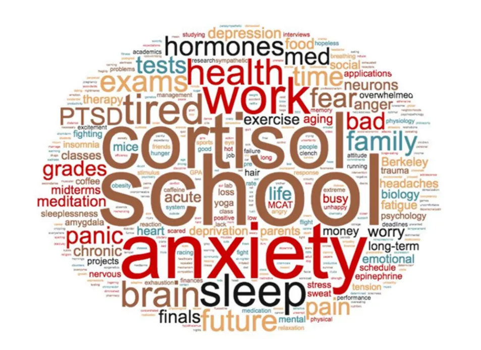
Biomedical perspective
Hans Selye—the founder of the field of stress research—defined stress from a physiological viewpoint as “the nonspecific response of the body to any demand made upon it.” According to Selye, “anything that speeds up the intensity of life, causes a temporary increase in stress” (Selye, 1974). To fully understand this definition, we need to first define the concept of allostasis. Allostasis means “achieving stability through change.” It includes the mechanisms that maintain life-sustaining functions (for example, body temperature, blood sugar levels, fluid balance, etc.) which must be kept within a pre-set range (see Introduction). In addition, allostasis also includes processes that promote adaptation to challenge and expand our survival or coping capabilities. A classic example is fat accumulation in a bear preparing for hibernation. Fat accumulation is an anticipatory change that prepares the bear for survival during winter. Here, allostatic mechanisms accommodate this change, i.e., an expanded physiological state to promote survival.
Based on Selye´s definition, any stimulus that speeds up the intensity of life (be it good or bad, pleasurable or painful, real or implied), and perturbs the physiological and psychological integrity of an organism is defined as a stressor. Interestingly, these can be deviations in variable, and even opposite directions: exposure to extreme heat or cold, starvation or obesity, injury, or threat to one's well-being, like when encountering a predator. Stress is the body’s stereotyped physiological response to that stimulus. It is an evolutionarily conserved response and essential for survival. The stress response is orchestrated across all cells and tissues of the body to mobilize energy to support vital functions which are necessary to survive the immediate threat. For example, pumping glucose and oxygen to the heart, skeletal muscles and brain, and away from functions that are not pertinent to the immediate survival (e.g., digestion and reproduction).
Now that we’ve shifted our focus to the physiological response that occurs after exposure to a stressor, we notice that regardless of the specific stressor that initiated it, the broad physiological response will largely be the same. For example in our mountain lion scenario, both the students (i.e., potential prey), as well as the mountain lion itself, experience a stress reaction during the encounter. It is important to note that a similar physiological cascade of events can be initiated by an internal cue, in the absence of a physical threat. One can be sitting in a room, thinking about a fearful situation, and this may be sufficient to mount a full physiological response. Over decades of research, accumulating data has started to bridge our understanding of the physiological and psychological realms of stress, to create a unified picture. You will soon learn how the psychological appraisal of a situation influences the physiology of the stress response.
Now, most of us have probably experienced the feeling of being ‘stressed out’, the point at which a stressor becomes too much (i.e., it lasts too long, is too intense, or too much for a certain person to deal with) and leads to detrimental effects on the body. The term ‘stressed out’ was coined by another of the founders of the field of stress research, Bruce McEwen, to mean only the negative aspects of the response. We will revisit this idea of being ‘stressed out’—a concept termed allostatic (over)load or toxic stress—in Clinical Implications of Stress.
The stress response (aka the ‘fight-or-flight’ response)
Our working definition in this chapter for the stress response is: a physiological reaction that occurs in response to an actual or perceived harmful event, attack or threat to survival, which results from the coordinated action of the central and peripheral autonomic nervous systems and endocrine (hormonal) system; to generate physiological, cognitive, cardiovascular and metabolic changes that allow an organism to respond to a perturbance, promoting fitness and survival. We will explain this in detail throughout this chapter.
Generally, an event (stressor, stimulus) occurs, like a mountain lion appearing on our morning run. Or there is the perception that a threatening event might happen. This can be hearing a roar, or the thought that a mountain lion was spotted here last week. This is briefly followed by an appraisal of the threat. This appraisal relies on neural activation in the amygdala (the brain’s alarm center), the prefrontal cortex (which regulates decision-making) and other circuits. And finally, there is a response to the threat (fighting, running away or freezing). The appraisal of the threat, the predictability of the stressor (whether you expected it or not) and sense of control over the situation (controllability) are 3 critical factors in mounting the stress response and in regulating its termination. We will discuss this in more depth in Interindividual Variability and Resilience in Response to Stress .
Note that the focus of the field for many years has been on the ‘fight-or-flight’ response but there is also the freezing response. Freezing is a form of behavioral inhibition and functions to decrease the likelihood of detection since the visual cortex of many predators is programmed to detect moving objects. Freezing also reduces the chance that we make inadvertent sounds that other animals might detect (see discussion of cues in Introduction). Freezing is not a passive state (i.e., the brain has not ‘stopped working’). Rather it allows for perception and preparation of further defensive responses (Roelofs, 2017).
Functions that support the stress response
The stress response orchestrates all body systems so that they are primed and optimized to deal with the emergency situation at hand, many of which are diagrammed in Major adaptive body responses to stress
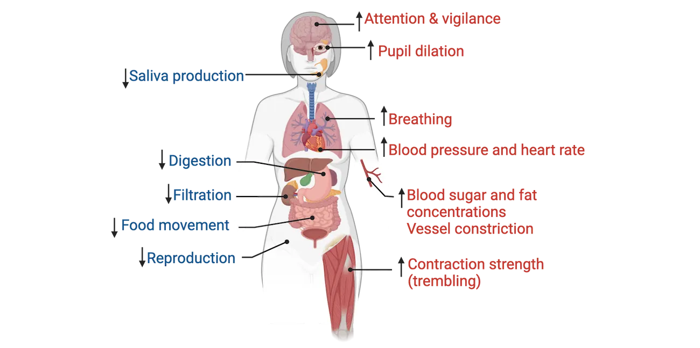
If an individual needs to quickly run away from something, what functions would support this? Attention needs to be focused on the situation right now, so there are brain connectivity changes that occur to promote vigilance and sharpen attention. Pupils dilate to better detect even faint stimuli. Quick and deep breathing occurs to increase oxygen supply to the heart, skeletal muscles, and brain. Similarly, there are metabolic changes that increase the energy supply (increased blood sugar and fat concentrations) in the blood. Blood pressure and heart rate increase and blood flow is diverted away from other parts of the body and redirected to the muscles. As muscles become more tense, trembling can occur. Blood vessels in the skin constrict since blood flow is being diverted to muscles, resulting in chills or sweating. Everything else, that is, all non-vital functions like digestion, kidney filtration, and reproduction are slowed down. Thus, there is a decrease in saliva production (a person’s mouth getting dry when they’re nervous or anxious) and the output of digestive enzymes decreases. A slowdown of food movement through the bowels also occurs. One caveat, under situations of extreme stress, there might be a dumping of bowel contents. Similarly, because the absorption process through the bowels changes, ‘stress diarrhea’ can also occur. You may think back to a time when you were about to give a public speech—your mouth went very dry and you had a feeling that you needed to find the closest restroom ASAP. Now you know why.
Classification of stressors
Based on our definition of stress, stressors are anything that take an organism out of homeostatic range and thus can be a host of different stimuli/events. In this section, we will take a look at how stressors are classified and examples of each.
There are 3 main stressor domains:
- Origin or type describes the modality a stressor comes in. These can be physical, psychological, or social
- Duration describes how long a stressor lasts. Acute stressors generally range from minutes to hours. Subchronic stressors can last for days and chronic stressors range from weeks to years. Note that the initial stress response to an acute, subchronic or chronic stressor is the same, but differences arise once the stressor becomes a sustained event.
- Severity describes whether it’s a minor, moderate or major life-threatening event. These range on a scale from mild to moderate to severe to traumatic.
Physical stressors
Acute physical stressors include physical exertion or exposure to extreme environmental conditions (e.g., participating in a competitive cycling race, or acute exposure to extreme heat or cold). In the animal world, a classic example is a predator-prey interaction. Another is sustaining an acute injury (e.g., a broken arm). Chronic physical stressors include chronic illness and obesity/starvation (i.e., moving away from the homeostatic body weight set point). Prolonged exposure to extreme environments is also a form of chronic physical stress. For example, staying at high altitude where the body needs to cope with decreased oxygen availability. Examples of physical stressors shows examples of physical stressors, both acute and chronic.
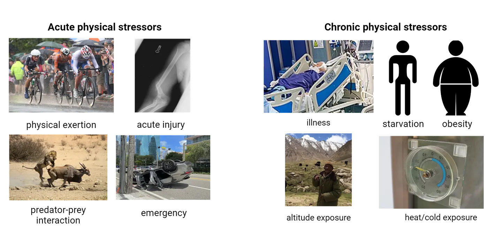
Psychological stressors
Psychological stressors are the most common types of stressors for us modern humans, and what most people think of when asked to give examples of stress. These can also be classified as acute or chronic and range in severity. Examples of psychological stressors shows examples of psychological stressors. Interestingly, these stressors typically originate from thoughts of a potential perceived threat or worry, yet elicit the same physiological sequela aimed at facilitating the optimal function of the organism as it faces the need to fight, flee or freeze. This stressor category includes mundane events like arguing with a coworker or sitting in traffic, to more notable events like getting divorced, experiencing grief or financial and career worries.
Social stressors
For highly social species, including us humans, social interactions can provide a potent source of stressors, while supportive social bonds can act as an effective buffer of stress responses. Examples of social and societal stressors shows examples of social and societal stressors, both acute and chronic. These can also range in severity. Much of the research on social stress in animal models has focused on social isolation or social hierarchy and its negative effects on wellbeing. In humans, there is also compelling data that demonstrates that social rejection is a potent cue activating the stress response (Dickerson and Kemeny, 2004). Social belonging was critical for survival success in primal societies and hence our brains are particularly sensitive to cues of social exclusion. In fact, the social environment interacts with stress on almost every front: social interactions can be potent stressors, they can buffer the response to an external stressor, and social behavior often changes in response to stressful life experiences. The next frontier in the interaction of the social world and stress is looking at the physiological and psychological effects of virtual social environments, as these take center stage in our daily realities.
Finally, we must consider societal stressors. Societal issues such as poverty, racism and inequality are particularly important to discuss because they have a considerable impact on health and well-being. Growing up in or living in poverty, or experiencing racism or inequality can change the pattern of the stress response throughout life and negatively impact health outcomes and health span. These are critical topics that need to be considered in medical and public health-level discussions.
Valence of the stress response
We now know that the stress response is critical to survival but it has also garnered the reputation of being detrimental to health and wellbeing. This brings up the question of valence: is stress always a bad thing?
Inverted-U nature of the stress response
It turns out that some amount of stress is actually good and can enhance performance in the same domains where too much stress is detrimental (memory and executive function, for example). This type of relationship where increasing amounts of some factor (stress in our case) results first in an increase and then a decrease of a second factor (performance for example) is referred to as an inverted-U relationship (Yerkes-Dodson law). Inverted-U nature of the stress response shows a typical inverted-U curve with increasing stress (stress/stimulation) on the x-axis and some measure of behavioral performance (e.g., memory function, decision-making, learning, playing an instrument, etc.) on the y-axis.

Notice that there is a point on the curve where performance reaches a peak, where attention gets very focused, rational thinking sharpens and emotional regulation is at its best: an optimal level of stress. This region of positive stress or eustress is defined as stress that is perceived as within an individual’s coping abilities, motivates and focuses energy, may feel exciting, improves performance (Lazarus, 1998), and can protect against future stressors (a phenomenon termed ‘stress inoculation’).
Think about the functions that support the stress response: the sharpening of attention and focus, the increased energy supply in the bloodstream, and something that we didn’t discuss but is also important, the mobilization of immune cells ready to protect against damage. This physiological state means that you’re prepared and ready to tackle a challenge. For example, an upcoming final exam. You need to be focused, energized and cannot afford to get sick. Interestingly, viewing a challenge, for example, a slew of final exams or a tough new project at school or work as a positive thing can result in eustress. The key is not the stressor itself but how we perceive it. If we see it as an opportunity to learn new skills and showcase our abilities, we will feel energized and motivated to tackle it. On the other hand, if we perceive this as an obstacle or something beyond our coping capacity, we will not feel these positive effects of eustress and instead will likely feel signs of distress. Thus, the mindset with which we approach stress can have a significant impact on the outcome.
Finally, reframing stress-induced physiological reactions like a ‘racing’ heart as helpful and adaptive versus harmful has been shown to result in improved cognitive and physiological outcomes during/after a stressor (Jamieson et al., 2012). We will learn more about how stress perception, appraisal and reframing of stress-induced arousal can lead to positive outcomes in Interindividual Variability and Resilience in Response to Stress.
Detrimental effects of stress exposure
When there is too little or too much stress (negative stress or distress), performance is decreased. With too little stress or stimulation, there might be impaired attention, boredom or even apathy. With too much stress (chronic or traumatic stress exposure), performance declines even further, resulting in impaired memory and executive functions or even burnout. Eventually, this could lead to the development of psychiatric disorders, for example, anxiety, depression, posttraumatic stress disorder (PTSD) or other stress-related pathologies (see Introduction).
An important question, then, is when exactly does stress become detrimental? There is no exact answer because it differs from person to person based on an individual’s genetics, epigenetics, life history, capabilities/resources at the moment the stressor occurs, appraisal of the situation and other factors. All of these vary amongst individuals (interindividual variability) and some factors will vary even for the same person at different times (intraindividual variability). You will learn more about this topic in Interindividual Variability and Resilience in Response to Stress.
Neuroscience across Species: Methods to study stress
To understand the nature, dynamics and outcomes of the stress response, we carry out research in humans and in a variety of animal models, which we will discuss in this section.
Human research on stress
Research on the effects of stress in humans is largely correlational—that is, an investigator studies the relationship between two variables (for example, exposure to a traumatic stressor and the development of PTSD), as opposed to actually manipulating one of the variables. In these correlational designs, study participants are typically individuals with extreme exposure to stress or trauma (e.g., individuals that were in a severe car accident, experienced sexual abuse, participated in combat, experienced childhood maltreatment). Researchers use a cross-sectional study design, comparing those who experienced the extreme stressor(s) to a control group with similar demographics in order to understand the effects of stress exposure on different outcome variables. When studying stress-related pathologies, like anxiety, depression or PTSD, study participants will be individuals that meet the clinical criteria for diagnosis of those disorders and controls will be age and sex matched people who do not meet diagnostic criteria.
We can also study stress in humans in a laboratory setting where subjects are exposed to a stressful setting, and consequently, a stress response is induced. This design allows for better control over timing. This type of study is not correlational in nature as it involves manipulation of one of the variables, i.e., the stressor. For example, you can induce stress and then measure the dynamics of stress hormone concentration rising, and then resolving to baseline. The most common protocols are tasks that involve public speaking or scenarios that involve unpleasant social interactions. For example, a scenario using a virtual ball game where the study participant is purposely excluded (the ball is not passed to them). A widely used human laboratory stressor which reliably induces a stress response was developed at the University of Trier (Germany). It’s called the Trier Social Stress Test (TSST). It combines elements of anticipatory stress, public speaking and performing mental mathematics before a panel of judges (Trier social stress test).
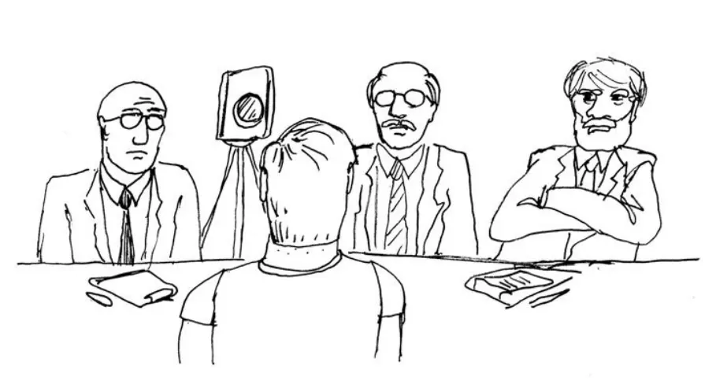
The TSST has been used in dozens of studies. It was used to: 1) map the magnitude and duration of neuronal and hormonal aspects of stress responses, 2) identify between-subject variability in the response, and 3) understand resilience and vulnerability to stress upon first exposure and repeated exposure.
Animal models of stress
Animal models enable us to study the molecular, cellular and physiological mechanisms underlying the body’s response to stress. The stress response is conserved throughout evolution, and a similar response can be measured across taxa. This similarity across species has enabled the development of a variety of different animal models (monkeys, apes, chinchillas, mice, rats, fruit-flies, zebrafish) to examine stress-related effects through laboratory interventions and field studies. Lab studies take advantage of the fact that variables like timing and severity of the stressor, as well as environmental conditions (nutrition, type of housing, temperature, humidity, light-dark cycle, etc.) can be controlled. Other advantages to using lab-based models is that the responses to stress can frequently be measured before and after a stressor in the same animal, and genetics and life history of individual animals are controlled for. Most stressors currently in use are social/psychological in nature and reflect the types of stressors most relevant to humans. Rodents are a widely used animal model and the following sections will focus on them. Stressor models in rodents diagrams some of the common stress models in rodents that we will discuss below.
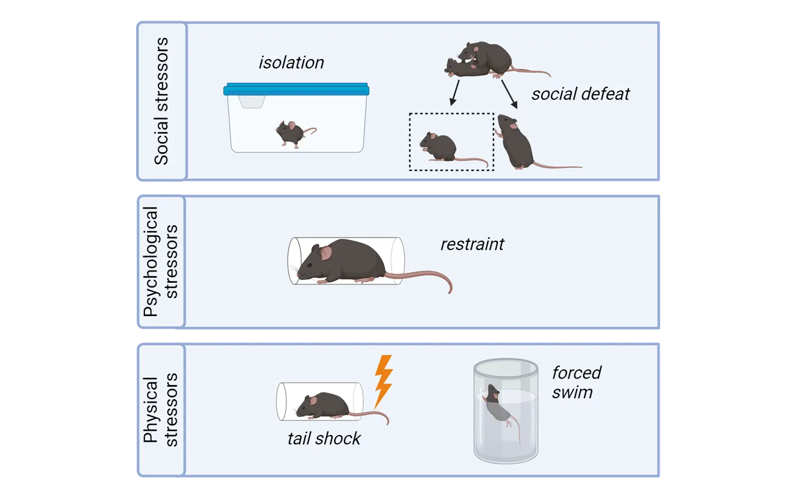
Social stress models
Social isolation: Like humans, rodents are social animals. Thus, social access or social interactions can be manipulated to activate a stress response. Social isolation is a moderate to severe stressor. It can be applied chronically, for example having a mouse live alone in a cage for a certain period of time (months) or grow up in cages where they’re isolated from one another during a developmental period like childhood. Social isolation can also be an effective stressor acutely: removing a mouse from their home cage for ~24 hours can induce a stress response. Maternal separation is a specific type of social isolation during the developmental period that aims to model early-life adversity or neglect and how that influences stress responsivity throughout life.
Social defeat: Frequently implemented using a resident-intruder test, social defeat is a severe stressor which uses physical conflict between a smaller mouse (intruder) and an older, aggressive, dominant, male mouse (resident) in order to generate a stress response. After a brief physical confrontation, a plexiglass divider is inserted into the cage. This physically separates the mice but still allows the smaller mouse to see and smell the aggressor mouse, which serves as a further psychological stressor. This interaction repeats for 10-30 days. Social defeat has been used as a model for bullying and depression in humans.
Psychological stress models
Immobilization/restraint: In this widely used laboratory stressor, animals are placed in a restraining tube or bag so that they cannot move. It doesn’t physically hurt them but rather serves as a psychological stressor since it prevents any movement or escape. Immobilization can be short (e.g., one 3-hour long session) or longer-term (e.g., 3 hours/day for 28 days) and can thus be used to model both acute and chronic stress. It can also be made more severe/traumatic if it is paired with exposure to predator odor, for example, fox urine or a collar worn by a cat.
Physical stress models
Tail shock: As the name implies, tail shock stress uses an electrical shock administered to the rodent’s tail. Tail shock is generally used in studies aiming to investigate stress-induced anxiety/depression.
Forced swim: Rats or mice are made to swim in a tall cylinder without the possibility of escape for a set duration of time. This stressor can be both a source of stress and an assay for stress-induced changes in behavior that may be relevant to features of depression. During forced swim, an animal will initially try to escape (show a burst of activity) and then become immobile, i.e., make only movements necessary to keep its head above water. Increased immobility is interpreted as a sign of behavioral despair or helplessness.
Validity of animal models for human disease
When establishing or utilizing an animal model for the purpose of developing insight relevant to human physiology, we need to ensure that the animal system is a valid model for the human system. Comparing animal models to humans can be especially challenging when we are interested in things like thoughts and feelings (i.e. more abstract functions of the brain). For example, we can determine that a person is depressed by asking them detailed questions and they can report back how/what they are feeling. This is, of course, impossible in a mouse (or other animal). Thus, we need to consider ways to ‘interrogate’ the mouse’s behavior and figure out what aspects are meaningful or mimic the human disorder.
When modeling diseases in non-human animals, there are three criteria that must be taken into account for validation: 1) face validity (is the observable behavioral outcome similar to human symptoms; the behavior needs to be a good analog of the human behavior, not necessarily the same behavior), 2) construct validity (does the underlying mechanism reflect the cause of the disease in humans), and 3) predictive validity (are the same treatments effective). To learn more about how we assess animal models of stress-induced depression, see the Feature box on “How do we model depression?”
Summary
The stress response is a non-specific physiological reaction to any event (stressor) that takes an organism out of homeostatic range. It is necessary for survival and to adapt to challenges. Stressors are classified by type, severity, and duration. The stress response follows an inverted-U pattern: too little or too much stress is deleterious to behavioral performance but there is an optimal level that is beneficial. Research on stress seeks to understand the mechanisms underlying both pathological and salutary effects of stress in humans and is carried out using humans and animal models.
Key terms
stress, stressor, stress response, allostasis, stressor type (physical, psychological, social), stressor duration (acute, subchronic, chronic), stressor severity (mild, moderate, severe/traumatic), inverted-U curve, eustress, distress, animal modelReferences
Dickerson, S. S., & Kemeny, M. E. (2004). Acute stressors and cortisol responses: A theoretical integration and synthesis of laboratory research. Psychological Bulletin, 130(3), 355–391. https://doi.org/10.1037/0033-2909.130.3.355
Jamieson, J. P., Nock, M. K., & Mendes, W. B. (2012). Mind over matter: Reappraising arousal improves cardiovascular and cognitive responses to stress. Journal of Experimental Psychology: General, 141(3), 417–422. https://doi.org/10.1037/a0025719
Lazarus, R. S. (1993). From psychological stress to the emotions: A history of changing outlooks. Annual Review of Psychology, 44, 1–21. https://doi.org/10.1146/annurev.ps.44.020193.000245
Roelofs, K. (2017). Freeze for action: Neurobiological mechanisms in animal and human freezing. Philosophical Transactions of the Royal Society of London. Series B, Biological Sciences, 372(1718), 20160206. https://doi.org/10.1098/rstb.2016.0206
Selye, H. (1974). Stress without distress (1st ed.). Lippincott.
Practice The multiple-choice and fill-in-the-blank questions for this section are interactive and live on OpenStax, so they are not carried here: open the book on openstax.org.
12.2Neural Mechanisms and Circuitry of the Stress Response
By the end of this section, you should be able to
- Describe the fast (millisecond) neural mechanisms that mediate the ‘fight-or-flight’ response
- Understand the function of the endocrine system and its role in the stress response
- Describe the circuitry of stress in the brain
- Explain how stress modulates the function of stress-responsive regions of the brain
- Identify the connection between the neural circuitry of stress and HPA axis function
Recall that the stress response consists of the following sequence of events. A threat cue arrives; for example, we spot a mountain lion during our morning run. Or we might perceive that such an event might occur (we hear a roar or we remember reading in the news that a mountain lion was sighted here last week). The brain’s alarm center—the amygdala—is activated with input from other brain regions like the hippocampus which provides situational context information and the prefrontal cortex which regulates decision-making. The amygdala activates: 1) the sympathetic (‘fight-or-flight’) branch of the autonomic nervous system which mediates a fast (millisecond) neural response culminating in the release of epinephrine (also known as adrenaline) and 2) the hypothalamus, which initiates a slower, hormonal response (hypothalamic-pituitary-adrenal (HPA) axis response) that requires 3-4 minutes to start reaching the body’s organ systems via circulating blood. These two systems (nervous and endocrine) are interconnected and work very tightly with one another to facilitate this response. We are now prepared to respond: fight, flee or freeze for further perception and defensive action planning. Termination of the stress response occurs later via engagement of the parasympathetic branch of the autonomic nervous system, which opposes sympathetic activation, and activation of allostatic mechanisms that restore homeostasis.
In this section, we will learn the steps of activation and deactivation in each of these systems and the neural circuitry (major stress-responsive brain regions) that both mediate and are in turn, modulated by stress exposure.
Sympathetic versus parasympathetic nervous system function
Recall from Introduction that the autonomic nervous system (ANS), also known as the involuntary nervous system, regulates housekeeping or vegetative bodily functions. The ANS has two ‘branches’: the parasympathetic nervous system (PNS) and the sympathetic nervous system (SNS). Both systems innervate the same organs, but in an opposing manner. While the PNS mediates ‘rest-and-digest’ functions, the SNS is involved in the quick (millisecond) neural ‘fight-or-flight’ response as shown in Stress and the autonomic nervous system.
![Diagram of the human body with organs highlighted with functions regulated by the autonomic nervous system. Sympathetic functions are all shown increasing while parasympathetic functions decrease. Parasympathetic functions: constricts pupils and stimulates tear production and salivation, constricts airways, slows heartrate, stimulates digestion, stimulates voiding of bladder, stimulates erection of genitals. Sympathetic functions: dilates pupils and inhibits salivation, relaxes airways, increases heartrate, stimulates glucose production and release, stimulates the release of adrenaline, inhibits digestion, inhibits voiding of bladder, stimulates orgasm.](../assets/textbook/img/Image-12.07_Stress-and-the-autonomic-nervous-system.webp)
The SNS mediates this rapid neural response to stress in two ways:
- Direct innervation of organs/tissues to effect changes through neural signaling (sympatho-neural system). This pathway originates in the hypothalamus and releases norepinephrine (noradrenaline) onto visceral effectors in target organs, e.g. the heart, lungs, stomach, liver, etc.
- Through innervation of the adrenal gland medulla (sympatho-adrenomedullary system). This pathway synapses directly onto chromaffin cells of the adrenal medulla, triggering the release of epinephrine (adrenaline) into circulation. It mimics the hormonal response we will cover next to some extent because it results in hormonal release, but it is carried out via neuronal innervation of the adrenal medulla (not through a 2-step chain of hormones). The adrenal gland is also unique in that it does not receive PNS innervation like other glands/organs do.
HPA axis stress response
Coincident with the SNS activation upon perceiving a stressor, the hypothalamic-pituitary-adrenal axis (HPA axis) is also activated, leading to a chain of events involving multiple glands in order to produce powerful and sometimes long-lasting effects. While the SNS activation takes milliseconds, the sequence of steps in HPA activation take several minutes to be triggered one after the other. Like the SNS, though, the HPA axis is typically tightly regulated by multiple excitatory and inhibitory signaling inputs, ensuring a rapid response to stressful events, and a timely shut down of the response and return to equilibrium.
The HPA axis consists of the tiered release of 3 hormones from the 3 structures/glands that comprise it (the hypothalamus, the pituitary and the adrenal glands). The sequence of steps is diagrammed in HPA axis.
![Diagram of the human body with organs highlighted with functions regulated by the autonomic nervous system. Sympathetic functions are all shown increasing while parasympathetic functions decrease. Parasympathetic functions: constricts pupils and stimulates tear production and salivation, constricts airways, slows heartrate, stimulates digestion, stimulates voiding of bladder, stimulates erection of genitals. Sympathetic functions: dilates pupils and inhibits salivation, relaxes airways, increases heartrate, stimulates glucose production and release, stimulates the release of adrenaline, inhibits digestion, inhibits voiding of bladder, stimulates orgasm.](../assets/textbook/img/Image-12.05_HPA-axis.webp)
A stressor is perceived and corticotropin releasing hormone (CRH) is released from the hypothalamus into the hypophyseal portal system, a small blood network that connects the hypothalamus to the anterior pituitary (step 2 in HPA axis). As shown in Microcircuit of the pituitary gland, the pituitary gland is comprised of two distinct anatomical parts: the anterior pituitary and posterior pituitary. The anterior pituitary produces and secretes various hormones in response to signals from the hypothalamus. Most relevant to the stress response, CRH from hypothalamic neurons stimulates the anterior pituitary gland to produce and secrete adrenocorticotropic hormone (ACTH) into the systemic bloodstream (step 3 in HPA axis).
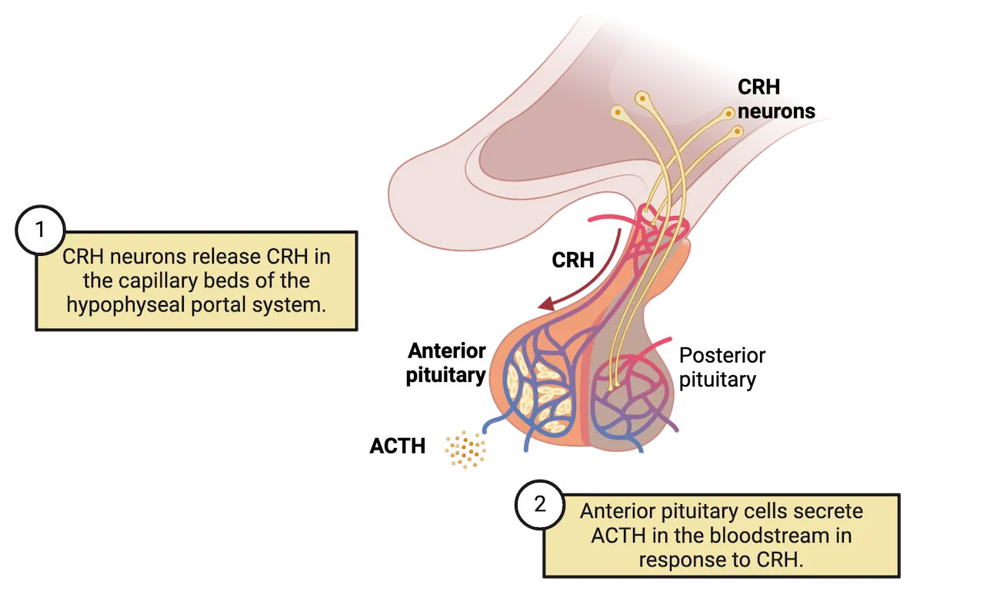
ACTH circulates throughout the body, eventually reaching the adrenal glands, which sit on top of the kidneys. ACTH then induces the synthesis and release of the glucocorticoid hormone cortisol (cortisol in most mammals including humans; corticosterone in most laboratory rodents) from the cortex (outer shell) of the adrenal glands (step 4 in Image HPA axis). Glucocorticoids have massive and far-reaching effects on the body and brain, including increases in blood pressure, increased glucose circulation, decreased reproductive axis output, complex effects on immune functions and various other effects (step 5 in HPA axis). In addition to glucocorticoids, the adrenal gland also produces epinephrine and various other hormones from cells in the adrenal medulla (inner core) in response to the fast neural stress response described above. The adrenals are therefore a convergence location for HPA and neural components of the stress response, albeit via separate parts of the gland.
Feedback mechanisms
Glands of the endocrine system not only secrete hormones, but they respond to them as well. These responses allow for tight regulation of the amount of hormones in the bloodstream. One of the ways it achieves this is through feedback to the original gland. Negative feedback in an endocrine system like the HPA axis occurs when a hormone feeds back to some level of its activating system in order to inhibit further secretion.
There are several classifications of feedback in endocrine systems, diagrammed in Feedback mechanisms.
![4 diagrams of feedback mechanisms. Autocrine (ex. growth factors): endocrine cell affects target cells and give negative feedback to itself. Target cell feedback (ex. insulin + glucose): endocrine cell affects target cells and target cells cause a biological response which then gives negative feedback to endocrine cell. Brain regulation (ex. epinephrine): Hypothalamus stimulates endocrine cell. Endocrine cell affects target cells and target cells cause a biological response which then gives negative feedback to hypothalamus. Brain and pituitary feedback (ex. cortisol and HPA): Hypothalamus stimulates pituitary which then stimulates endocrine cell. Endocrine cell affects target cells and target cells give negative feedback to hypothalamus and pituitary.](../assets/textbook/img/Image-12.10_Feedback-mechanisms.webp)
When a hormone binds to receptors on its originating cell to change hormone secretion levels, it is called autocrine feedback. Another mechanism, called target cell feedback, occurs when a hormone binds a target cell and elicits a biological response that feeds back to the original driver and inhibits further secretion. Feedback mechanisms can get complex and involve regions of the brain in addition to glands. Negative feedback involving the brain can look like an endocrine response that feeds back to the brain region that initiated hormone secretion (often the hypothalamus) in order to shut that brain region activity down (brain regulation). Sometimes the pituitary also gets involved, working as an intermediary between the higher brain region and the endocrine cells (brain and pituitary feedback).
HPA axis negative feedback fits the 'brain and pituitary' model, occurring at multiple levels, shown in Feedback mechanisms. The major negative feedback targets of glucocorticoids released by the adrenals is shown as step 6 in HPA axis. Most proximate to the adrenals, the pituitary gland responds directly to glucocorticoids, shutting down production of ACTH in response to high glucocorticoid levels. When pituitary function is impaired, it can impact the homeostasis of the HPA axis and potentially cause other neuropsychiatric symptoms by altering the function of other brain regions. For instance, Cushing’s syndrome is a type of pituitary adenoma (benign tumor) that produces too much ACTH, resulting in overflowing glucocorticoids in the body. Patients with Cushing’s syndrome not only exhibit impaired body metabolism, but also display comorbidity with various psychiatric conditions, for example personality disorders, psychosis, depression, and anxiety disorders. Although the exact mechanisms underlying the link between Cushing’s syndrome and psychiatric disorders are unknown, it is likely that the high glucocorticoid levels may directly impact other brain regions expressing glucocorticoid receptors or indirectly impact overall brain function at a circuit level.
The hypothalamus is also an important regulator of the pituitary and serves as a site for glucocorticoid feedback resulting in inhibition of CRH secretion. Several other brain regions also participate in glucocorticoid negative feedback to the HPA. The hippocampus has direct connections with the hypothalamus, and these inhibit the hypothalamus when the hippocampus is exposed to high levels of glucocorticoids. Receptors for glucocorticoids are also expressed in other areas of the limbic system, such as the prefrontal cortex, amygdala, and thalamus. Negative feedback through these indirect pathways to the hypothalamus shuts down the response elicited by the HPA axis. These areas of the limbic system contribute to control of the HPA axis and create more complex feedback mechanisms. We will learn more about these higher brain regions’ roles in the stress response in later sections.
Stress hormone cortisol receptor signaling
Both negative feedback and the effects of glucocorticoids on body organ systems rely on these hormones binding to receptors expressed on target cells. Glucocorticoids, like cortisol, can bind to receptors expressed by cells all over the body. In fact, every cell in our body expresses at least one type of glucocorticoid receptor. While most neurotransmitter receptors we have learned about are present on the cell surface (see Introduction), glucocorticoid receptors are found mainly inside the cell, floating in the cytoplasm. Glucocorticoids like cortisol, the main stress-related glucocorticoid in humans, are steroid hormones, which are lipid-based. Being small fatty molecules, they diffuse freely through the cell membrane to bind intracellular glucocorticoid receptors. When the ligand cortisol binds to a glucocorticoid receptor, there is a conformational change in the receptor itself that leads to dimerization with another activated receptor, and exposure of a nuclear localization signal that directs it to the nucleus. In the nucleus, the dimerized complex acts as a transcription factor, and modulates the transcription of thousands of genes (Glucocorticoid receptor action). This mechanism of action is global to all cells, but different cell types respond with a unique pattern of gene expression changes, which arises from the specific array of receptor and transcription factors expressed in each cell.
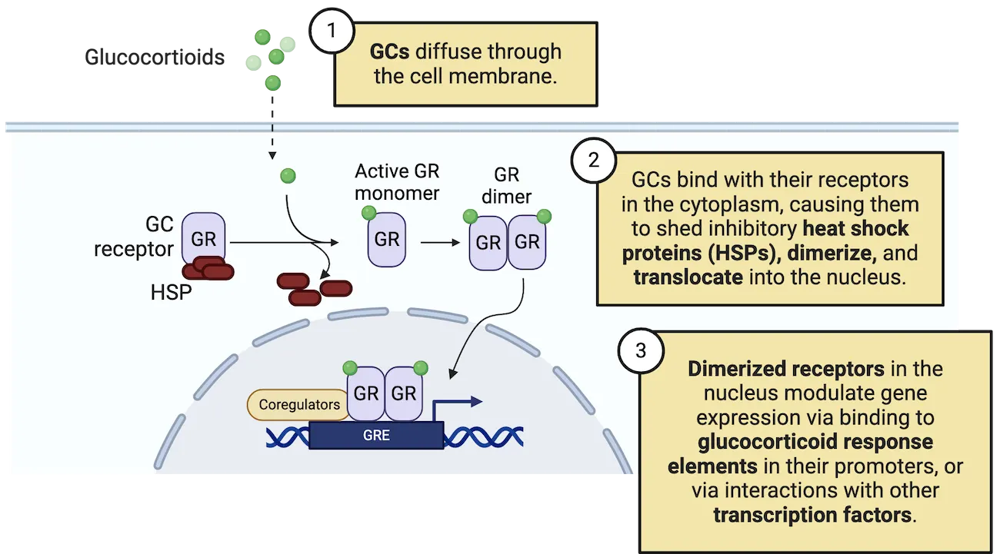
There are two different receptors for glucocorticoids, called glucocorticoid receptor (GR) and mineralocorticoid receptor (MR). Cells can have one or both. MRs are expressed in the kidney, colon, heart, adipose tissue, sweat glands, and central nervous system. They bind aldosterone and cortisol with high affinity. In vivo, MRs are 80-100% occupied at normal levels of cortisol. GRs, on the other hand, are expressed everywhere in the body and bind cortisol with lower affinity. GRs range from 10-80% occupancy. At normal cortisol levels, there is lower GR occupancy and at high levels there is higher occupation, making GR the stress-responsive receptor (Glucocorticoid receptor (GR) and mineralocorticoid receptor (MR) expression and occupancy).
![Top is two diagrams of a human body with organ systems shown. Left diagram shows CNS, heart, kidney, colon, sweat glands and adipose tissue. Text: Mineralocorticoid receptors are expressed in several organ systems. Right diagram shows many organs. Text: Glucocorticoid receptors are expressed in all organ systems. Bottom is diagram of gradients to represent MR occupation and GR occupation as glucocorticoid levels rise from low, through baseline to high stress. MR is occupied at basal glucocorticoid levels. GR becomes occupied as glucocorticoids rise during stress.](../assets/textbook/img/Image-12.28_GR-and-MR.webp)
SNS and HPA axis effects on the body and restoring balance
Do epinephrine/norepinephrine and cortisol have the same physiological effects? Mostly yes. This is because the rapid neural response and slower HPA endocrine response converge on the same organ systems. At first glance, this seems redundant. This convergence, however, means that there are numerous spots for regulation such that if a particular mechanism fails, there is a backup mechanism that can orchestrate the same alarm response.
We’ve learned throughout this topic that there are negative feedback loops that can stop the stress response at discrete points, for example, during HPA axis activation. But how is balance restored to the whole organism after this type of massive activation? Clearly, the SNS must be de-activated and the PNS must be activated. One of the ways of engaging PNS function is through deep breathing. This expands the diaphragm which stimulates the vagus nerve. The vagus (cranial nerve X) supplies parasympathetic information to visceral organs of the cardiovascular, respiratory, digestive and urinary systems and vagal stimulation activates the PNS. Termination or the ‘end’ of the stress response is not a clear-cut event, however. Cortisol, for example, can remain elevated for hours.
How stress affects the brain and behavior
We know that stress affects all organs throughout the body. However, the effects of stress on cells and circuitry of the brain are critical, because the brain regulates both arms of the response—the nervous and endocrine systems. In this section, we will move beyond the HPA axis and learn how connections between individual brain regions shape information and ultimately behavior. The brain regions we will discuss are summarized in Major stress-sensitive brain regions.
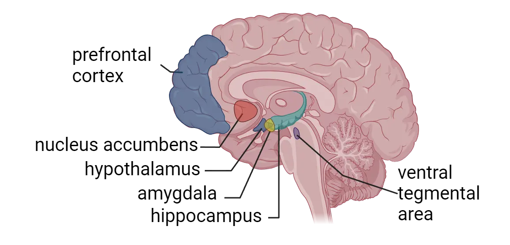
Amygdala
The amygdala is an almond-shaped cluster of nuclei located in the medial temporal lobe and is comprised of several subregions that are interconnected in a microcircuit. There are 2 amygdalae, one in each cerebral hemisphere. The amygdala as a whole helps coordinate emotional responses such as anxiety and fear to aversive stimuli (see Introduction). It plays a major role in the processing of physiological and behavioral responses to stress and is characterized by high inhibitory tone under resting state conditions. Exposure to stress, through threat-related input from the thalamus or high levels of glucocorticoids, leads to hyperactivity of the amygdala and is accompanied by the removal of this inhibitory control. The prefrontal cortex (PFC; discussed below), which mediates executive function, can balance amygdala activity by providing part of this inhibitory tone. The amygdala, in turn, sends outputs to the paraventricular nucleus of the hypothalamus (where CRH is synthesized), as well as several other brain regions that help coordinate fear and anxiety responses.
As a result of its role in emotion coordination, amygdala activity can potently modulate learning and memory, particularly fear learning induced by stress (see Introduction). For example, disrupting or blocking basolateral and central amygdala GRs attenuates fear conditioning in rodents (Donley et al., 2005, Kolber et al., 2008). Some of the stress-related regulation of learning also appears to rely on the direct actions of CRH, released by hypothalamic neurons directly onto neurons of the central nucleus of the amygdala which express CRH receptors (Haubensak et al., 2010; Gilpin et al., 2015; Tovote et al., 2015). Additionally, inhibition of central amygdala-CRH neurons disrupts the extinction of conditioned fear memories, indicating a potential role for this subpopulation of neurons in stress-associated fear learning (Jo et al., 2020).
The function of the amygdala in response to stress has been well documented in studies that utilized functional magnetic resonance imaging (fMRI) which measures small changes in blood flow as a proxy for brain activity (see Methods: fMRI). It is notable that patients with PTSD exhibit exacerbated amygdalar responses to emotional stress compared to healthy individuals (Morey et al., 2012). Thus, while some stress may enhance fear learning, too much can be detrimental (the inverted U). Stress-reduction interventions such as mindfulness-based training are correlated with decreases in the amygdala structure density (Holzel et al., 2010), underscoring the importance of the amygdala in the stress response and as a target for stress-reduction interventions.
Hippocampus
The hippocampus, located in the medial temporal lobe of each cerebral hemisphere, is an integral brain region for stress responses. It is highly sensitive to stress due to the abundant expression of GR and MR stress hormone receptors (Sapolsky et al., 1984). As we learned earlier in this section, the hippocampus plays a role in negatively regulating HPA axis activity, particularly in the shutdown of the HPA axis following activation. The hippocampus also mediates stress effects on several forms of learning and memory in complex ways. Stress can have both enhancing and impairing effects on hippocampal memory depending on the severity, length, and the stage that is affected (memory formation, consolidation, or retrieval). Generally, emotionally arousing events are very well remembered, a process mediated via GR signaling and amygdala input. Experiencing moderate or severe levels of stress, for example, may boost memory formation (a traumatic event tends to be very strongly encoded). However, because stress exposure can also modulate other stages like memory consolidation and retrieval, severe stress may also lead to impaired memory function.
The hippocampal response to stress involves several cell types, including neurons and glia, both of which may contribute to stress-related pathology or resilience in the hippocampus (Hallmarks of stress in the hippocampus). Mature neurons in the hippocampus are highly sensitive to steroid stress hormones. Activation of MR/GR-expressing hippocampal neurons is a critical part of the HPA axis negative feedback loop to the hypothalamus. Hippocampal neurons also change how they function in response to stress, particularly if the stressor is chronic. For example, a series of studies revealed that stress-associated neurosteroids can impact long-term potentiation (see Introduction) or neurotransmitter release from the presynaptic terminals in hippocampal neurons (Venero and Borrell, 1999; Karst et al., 2005; Groeneweg et al., 2011; Popoli et al., 2011).
One relatively unique (and stress-sensitive) aspect of the hippocampus is that it is one of very few regions in the adult brain that can generate new functional neurons in most mammalian species that have been studied to date. Integration of new neurons to existing neural circuitry has been implicated in spatial and emotional learning and memory functions, and in the regulation of the HPA axis. For example, increased neurogenesis in the ventral region of the dentate gyrus can reduce responses to anxiogenic (stress-inducing) stimuli (Anacker et al., 2018), indicating that neurogenesis may serve as a potential mechanism for resilience to stress. In addition to mediating responses to stress, adult neurogenesis is also regulated by exposure to stress. Chronic or traumatic stress exposure is a strong suppressor of hippocampal neurogenesis (Snyder et al., 2011; Cameron and Glover, 2015; Anacker et al., 2018; Cope and Gould, 2019). Acute moderate stress, in contrast, can promote adult hippocampal neurogenesis and is correlated with increased fear extinction (Kirby et al., 2013). The neurogenic response to stress, therefore, also shows the inverted-U pattern that is common to stress responses.
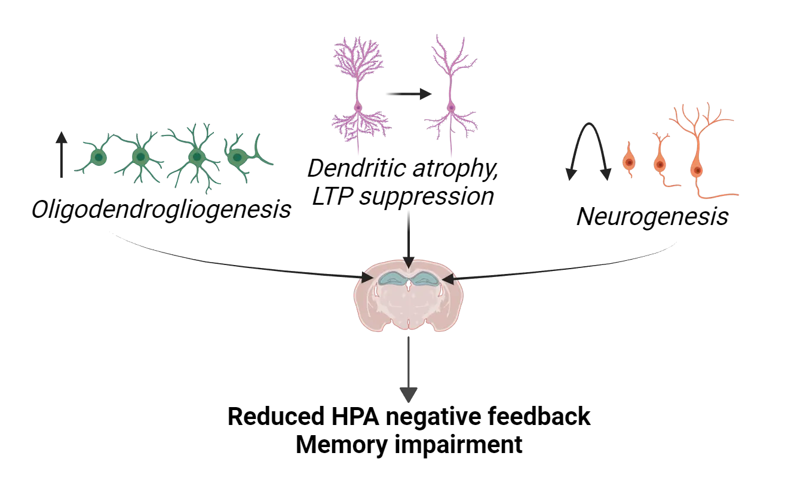
In addition to neurons, other supporting cells (glial cells) can respond to stress and play a role in stress integration. For example, a series of recent studies have highlighted a role for oligodendrocytes in response to stress. Chronic stress can promote the generation of oligodendrocyte precursor cells via glucocorticoid exposure and susceptibility to acute stress is linked to increases in myelin plasticity in the rat hippocampus (Chetty et al., 2014; Long et al., 2021). These findings indicate a potential role for hippocampal myelin and oligodendrocyte plasticity in stress susceptibility and resilience.
Prefrontal cortex
The cortex is comprised of multiple complex brain structures that play a key role in cognitive and executive functions. In this section, we will learn about a key cortical area, the PFC, and projection areas such as the ventral tegmental area (VTA) and nucleus accumbens (NAc) in HPA axis integration and the stress response.
The PFC is located in the anterior part of the frontal lobe and occupies one third of the frontal lobe in the human cerebral cortex (see Introduction). Through its interaction with other brain regions, the PFC orchestrates complex cognitive tasks requiring attention, planning, reasoning, and decision-making and exerts top-down or high-order control of other brain regions. Part of that function, which we discussed above, is providing inhibitory input to the amygdala, thereby helping to prevent, reduce or terminate stress responses.
Catecholamines play an important role in stress regulation of PFC function (see Introduction). Dopamine, in particular, modulates PFC function and PFC function modulates dopaminergic function. PFC dopamine interactions during stress diagrams these two types of pathways (DA to PFC and PFC to DA).

First, a large group of dopamine neurons in the VTA are known to project their axons to the PFC (Guiard et al., 2008) (see Introduction). These dopaminergic neurons fire in response to stressful stimuli. Thus, when exposed to stress, a subset of VTA dopamine neurons is activated (Brischoux et al., 2009), and the activated dopamine neurons in the VTA projecting to the PFC increase dopamine neurotransmitter levels in the PFC (Holly and Miczek, 2016). Small amounts of dopaminergic stimulus in the PFC will acutely increase PFC functions like working memory but if the stressor is more severe, it can flip to causing deficits in working memory (i.e., an inverted-U relationship).
The PFC feeds back onto the dopaminergic system via its projections to the NAc, converging there to modulate dopamine input from the VTA onto the NAc neurons (see PFC dopamine interactions during stress). The NAc is well-known for reward learning behavior, but recent studies point to a role in negative prediction error—predicting negative outcomes based on previous learning experience—as part of a coping mechanism for inescapable stress (Cui et al., 2020). The NAc receives glutamatergic inputs from the medial PFC (mPFC) and stimulation of mPFC has been shown to stimulate dopamine release in the NAc (Quiroz et al., 2016). This signaling supports the negative prediction error coping mechanism.
Neurochemical balance often plays a key role in the high-order control mediated by the PFC. As noted above, some dopaminergic input in the PFC promotes function while too much impairs it. Both acute or chronic stress can lead to neurochemical imbalances in the PFC (for example, increase in catecholamine neurotransmitter release (Finlay et al., 1995)). Long-term or severe shifts in dopamine input (and other neurotransmitters) result in dysregulation of other brain regions while eliciting susceptibility towards various neuropsychiatric disorders including PTSD, mood disorders, and attention deficit and hyperactivity disorders (ADHD).
Hypothalamus
As we saw previously, the HPA axis is critical for maintaining endocrine homeostatic balance, but more recent studies have also provided circuit-based evidence that hypothalamic CRH neurons (which release the first of the HPA axis trio of hormones) serve as a key component for proper behavioral responses to acute stress in rodents. We’ve previously mentioned how CRH input in the amygdala seems to directly support fear extinction, but CRH has other direct behavioral effects and may be particularly important for stress coping behaviors. Upon exposure to acute foot-shock stress, for example, mice exhibit distinct behaviors such as grooming, walking, and rearing. When hypothalamic CRH neurons are inhibited via optogenetic silencing (see Methods: Optogenetics), these behaviors are not displayed, indicating that hypothalamic CRH neuronal activation is important as part of stress-coping mechanisms (Fuzesi et al., 2016).
Summary
The stress response depends on multiple interconnected systems working on different timescales. The fast neural response is mediated by the SNS via the sympatho-neural system and sympatho-adrenomedullary system. The slower neuroendocrine response depends upon the HPA axis and is important for the long-term effects of the stress response as well as various other bodily functions. Activation of the HPA axis involves serial activation of the hypothalamus, pituitary gland, and adrenal gland to produce stress hormones. This in turn, produces changes in glucocorticoid levels with effects throughout the body. Termination of the stress response is not a clear-cut event, but vagal stimulation (through deep breathing) can engage the PNS and inhibit the SNS and help to restore homeostasis. Cortisol levels return more slowly to baseline with help from negative feedback mechanisms.
The brain orchestrates the body´s response to stress and stress, in turn, has major effects on brain circuitry, resulting in long-lasting changes in structure, function, and behavior. Major brain regions that are affected by stress and mediate behavioral responses include the prefrontal cortex, amygdala, hippocampus, and hypothalamus. These brain regions express stress hormone receptors and thus are directly stimulated by stress hormones. At the same time, they also receive signals via connections to other brain regions.
Key terms
amygdala, hippocampus, prefrontal cortex, autonomic nervous system, parasympathetic nervous system, sympathetic nervous system, sympatho-neural system, sympatho-adrenomedullary system, hypothalamic-pituitary-adrenal (HPA) axis, corticotropin releasing hormone (CRH), adrenocorticotropic hormone (ACTH), glucocorticoid, cortisol, negative feedback, Cushing’s syndrome, glucocorticoid receptor, mineralocorticoid receptor, ventral tegmental area (VTA), nucleus accumbens (NAc), top-down or high-order controlReferences
Anacker, C., Luna, V. M., Stevens, G. S., Millette, A., Shores, R., Jimenez, J. C., Chen, B., & Hen, R. (2018). Hippocampal neurogenesis confers stress resilience by inhibiting the ventral dentate gyrus. Nature, 559(7712), 98–102. https://doi.org/10.1038/s41586-018-0262-4
Brischoux, F., Chakraborty, S., Brierley, D. I., & Ungless, M. A. (2009). Phasic excitation of dopamine neurons in ventral VTA by noxious stimuli. Proceedings of the National Academy of Sciences of the United States of America, 106(12), 4894–4899. https://doi.org/10.1073/pnas.0811507106
Cameron, H. A., & Glover, L. R. (2015). Adult neurogenesis: Beyond learning and memory. Annual Review of Psychology, 66, 53–81. https://doi.org/10.1146/annurev-psych-010814-015006
Chetty, S., Friedman, A. R., Taravosh-Lahn, K., Kirby, E. D., Mirescu, C., Guo, F., Krupik, D., Nicholas, A., Geraghty, A., Krishnamurthy, A., Tsai, M. K., Covarrubias, D., Wong, A., Francis, D., Sapolsky, R. M., Palmer, T. D., Pleasure, D., & Kaufer, D. (2014). Stress and glucocorticoids promote oligodendrogenesis in the adult hippocampus. Molecular Psychiatry, 19(12), 1275–1283. https://doi.org/10.1038/mp.2013.190
Cope, E. C., & Gould, E. (2019). Adult neurogenesis, glia, and the extracellular matrix. Cell Stem Cell, 24(5), 690–705. https://doi.org/10.1016/j.stem.2019.03.023
Cui, W., Aida, T., Ito, H., Kobayashi, K., Wada, Y., Kato, S., Nakano, T., Zhu, M., Isa, K., Kobayashi, K., Isa, T., Tanaka, K., & Aizawa, H. (2020). Dopaminergic signaling in the nucleus accumbens modulates stress-coping strategies during inescapable stress. The Journal of Neuroscience: The Official Journal of the Society for Neuroscience, 40(38), 7241–7254. https://doi.org/10.1523/JNEUROSCI.0444-20.2020
Donley, M. P., Schulkin, J., & Rosen, J. B. (2005). Glucocorticoid receptor antagonism in the basolateral amygdala and ventral hippocampus interferes with long-term memory of contextual fear. Behavioural Brain Research, 164(2), 197–205. https://doi.org/10.1016/j.bbr.2005.06.020
Finlay, J. M., Zigmond, M. J., & Abercrombie, E. D. (1995). Increased dopamine and norepinephrine release in medial prefrontal cortex induced by acute and chronic stress: Effects of diazepam. Neuroscience, 64(3), 619–628. https://doi.org/10.1016/0306-4522(94)00331-x
Füzesi, T., Daviu, N., Wamsteeker Cusulin, J. I., Bonin, R. P., & Bains, J. S. (2016). Hypothalamic CRH neurons orchestrate complex behaviours after stress. Nature Communications, 7, 11937. https://doi.org/10.1038/ncomms11937
Gilpin, N. W., Herman, M. A., & Roberto, M. (2015). The central amygdala as an integrative hub for anxiety and alcohol use disorders. Biological Psychiatry, 77(10), 859–869. https://doi.org/10.1016/j.biopsych.2014.09.008
Groeneweg, F. L., Karst, H., de Kloet, E. R., & Joëls, M. (2011). Rapid non-genomic effects of corticosteroids and their role in the central stress response. The Journal of Endocrinology, 209(2), 153–167. https://doi.org/10.1530/JOE-10-0472
Guiard, B. P., El Mansari, M., & Blier, P. (2008). Cross-talk between dopaminergic and noradrenergic systems in the rat ventral tegmental area, locus ceruleus, and dorsal hippocampus. Molecular Pharmacology, 74(5), 1463–1475. https://doi.org/10.1124/mol.108.048033
Haubensak, W., Kunwar, P. S., Cai, H., Ciocchi, S., Wall, N. R., Ponnusamy, R., Biag, J., Dong, H. W., Deisseroth, K., Callaway, E. M., Fanselow, M. S., Lüthi, A., & Anderson, D. J. (2010). Genetic dissection of an amygdala microcircuit that gates conditioned fear. Nature, 468(7321), 270–276. https://doi.org/10.1038/nature09553
Holly, E. N., & Miczek, K. A. (2016). Ventral tegmental area dopamine revisited: Effects of acute and repeated stress. Psychopharmacology, 233(2), 163–186. https://doi.org/10.1007/s00213-015-4151-3
Hölzel, B. K., Carmody, J., Evans, K. C., Hoge, E. A., Dusek, J. A., Morgan, L., Pitman, R. K., & Lazar, S. W. (2010). Stress reduction correlates with structural changes in the amygdala. Social Cognitive and Affective Neuroscience, 5(1), 11–17. https://doi.org/10.1093/scan/nsp034
Karst, H., Berger, S., Turiault, M., Tronche, F., Schütz, G., & Joëls, M. (2005). Mineralocorticoid receptors are indispensable for nongenomic modulation of hippocampal glutamate transmission by corticosterone. Proceedings of the National Academy of Sciences of the United States of America, 102(52), 19204–19207. https://doi.org/10.1073/pnas.0507572102
Kirby, E. D., Muroy, S. E., Sun, W. G., Covarrubias, D., Leong, M. J., Barchas, L. A., & Kaufer, D. (2013). Acute stress enhances adult rat hippocampal neurogenesis and activation of newborn neurons via secreted astrocytic FGF2. eLife, 2, e00362. https://doi.org/10.7554/eLife.00362
Kolber, B. J., Roberts, M. S., Howell, M. P., Wozniak, D. F., Sands, M. S., & Muglia, L. J. (2008). Central amygdala glucocorticoid receptor action promotes fear-associated CRH activation and conditioning. Proceedings of the National Academy of Sciences of the United States of America, 105(33), 12004–12009. https://doi.org/10.1073/pnas.0803216105
Long, K. L. P., Chao, L. L., Kazama, Y., An, A., Hu, K. Y., Peretz, L., Muller, D. C. Y., Roan, V. D., Misra, R., Toth, C. E., Breton, J. M., Casazza, W., Mostafavi, S., Huber, B. R., Woodward, S. H., Neylan, T. C., & Kaufer, D. (2021). Regional gray matter oligodendrocyte- and myelin-related measures are associated with differential susceptibility to stress-induced behavior in rats and humans. Translational Psychiatry, 11(1), 631. https://doi.org/10.1038/s41398-021-01745-5
Venero, C., & Borrell, J. (1999). Rapid glucocorticoid effects on excitatory amino acid levels in the hippocampus: A microdialysis study in freely moving rats. The European Journal of Neuroscience, 11(7), 2465–2473. https://doi.org/10.1046/j.1460-9568.1999.00668.x
Jo, Y. S., Namboodiri, V. M. K., Stuber, G. D., & Zweifel, L. S. (2020). Persistent activation of central amygdala CRF neurons helps drive the immediate fear extinction deficit. Nature Communications, 11(1), 422. https://doi.org/10.1038/s41467-020-14393-y
Morey, R. A., Gold, A. L., LaBar, K. S., Beall, S. K., Brown, V. M., Haswell, C. C., Nasser, J. D., Wagner, H. R., McCarthy, G., & Mid-Atlantic MIRECC Workgroup (2012). Amygdala volume changes in posttraumatic stress disorder in a large case-controlled veterans group. Archives of General Psychiatry, 69(11), 1169–1178. https://doi.org/10.1001/archgenpsychiatry.2012.50
Quiroz, C., Orrú, M., Rea, W., Ciudad-Roberts, A., Yepes, G., Britt, J. P., & Ferré, S. (2016). Local control of extracellular dopamine levels in the medial nucleus accumbens by a glutamatergic projection from the infralimbic cortex. The Journal of Neuroscience: The Official Journal of the Society for Neuroscience, 36(3), 851–859. https://doi.org/10.1523/JNEUROSCI.2850-15.2016
Sapolsky, R. M., Krey, L. C., & McEwen, B. S. (1984). Glucocorticoid-sensitive hippocampal neurons are involved in terminating the adrenocortical stress response. Proceedings of the National Academy of Sciences of the United States of America, 81(19), 6174–6177. https://doi.org/10.1073/pnas.81.19.6174
Snyder, J. S., Soumier, A., Brewer, M., Pickel, J., & Cameron, H. A. (2011). Adult hippocampal neurogenesis buffers stress responses and depressive behaviour. Nature, 476(7361), 458–461. https://doi.org/10.1038/nature10287
Tovote, P., Fadok, J. P., & Lüthi, A. (2015). Neuronal circuits for fear and anxiety. Nature Reviews Neuroscience, 16(6), 317–331. https://doi.org/10.1038/nrn3945
Popoli, M., Yan, Z., McEwen, B. S., & Sanacora, G. (2011). The stressed synapse: The impact of stress and glucocorticoids on glutamate transmission. Nature Reviews Neuroscience, 13(1), 22–37. https://doi.org/10.1038/nrn3138
Practice The multiple-choice and fill-in-the-blank questions for this section are interactive and live on OpenStax, so they are not carried here: open the book on openstax.org.
12.3Interindividual Variability and Resilience in Response to Stress
By the end of this section, you should be able to
- Describe the factors that influence interindividual variability in the stress response
- Explain the concept of resilience and describe some of the beneficial effects of stress
- Describe some useful strategies to optimize the stress response
Not surprisingly, individuals vary greatly in their response to stress due to factors like genetics, epigenetics, biological sex, developmental and later life history, and even preconceptional and transgenerational influences. Additionally, factors like how a stressor is perceived, whether it’s predictable or controllable and the social milieu can dramatically alter an individual’s response. The good news is that not all stress is bad—moderate stressors have beneficial effects. In addition, multiple interventions including physical exercise, breathing exercises, meditation, and mindfulness-based stress reduction are proven techniques that can help not just mitigate but optimize one’s response to stress.
Factors that influence interindividual variability in response to stress
So far, we have described the generic response that is activated by stress—a response that is similar between many different manifestations of stress (physical, social or psychological) and evolutionarily conserved across taxa. This response involves the stereotypical neural and endocrine axis activation, but it can vary greatly between individuals. Biological, life history and psychological factors all contribute to this interindividual variability. For example, an individual’s genetic and epigenetic makeup, biological sex, and stress exposure during critical periods (e.g., in utero, neonatal and early life, adolescence, and exposure during aging later in life) all impact their response to stress. Recent evidence suggests that preconceptional and transgenerational mechanisms are also involved in setting up or shaping this interindividual variability. Finally, factors like an individual’s physiological and emotional state (are they hungry, tired), psychological differences in how a person perceives/appraises a stressor, whether the stressor is deemed as predictable or controllable, the availability of social resources, and specific characteristics of the encountered stressor can all lead to a more heterogeneous and fine-tuned response.
Genetic factors
Genetic factors that influence the stress response include polymorphisms in genes involved in glucocorticoid signaling and HPA axis regulation, monoamine neurotransmitter function, and regulation of brain plasticity. For example, the gene encoding FK506-binding protein 51 (FKBP5/FKBP51) is an important modulator of stress responses. FKBP5 acts as a co-chaperone for the glucocorticoid receptor. Specific alleles of the FKBP5 gene (e.g. T allele) are associated with blunted GR-dependent feedback inhibition of the HPA axis, resulting in dysregulated axis function (e.g. prolonged cortisol responses). In other words, people with certain genetic forms of the FKBP5 protein will take longer to turn off the HPA axis (and get their circulating cortisol levels back to normal) after a stressor because of impaired GR function compared to people with more typical forms of FKBP5.
These mutations in FKBP5 (and the chronically impaired shutdown of stress responses) have clinically relevant effects on behavior. For example, the T allele is associated with increased anxiety, attentional bias towards threat, hippocampal activation after fear/threat induction, and changes in amygdala volume which can predispose to development of stress-related pathology. In fact, alleles associated with greater FKBP5 induction and longer cortisol responses are associated with higher risk for Major Depressive Disorder, Posttraumatic Stress Disorder, suicidality, psychosis, aggression and violent behavior (for review see Zannas et al., 2016).
Developmental Perspective: Critical periods for stress exposure
Just like there are critical periods for learning and development, there are critical periods for stress exposure (see Introduction). During periods of our development, the brain is especially plastic, allowing for changes that can translate to risk or resilience in the face of stress later in life. During these periods, factors in the environment combine with those of our genetics to influence neurodevelopment. These effects can persist into adulthood, influence the trajectory of our lives, and manifest as vulnerabilities to mental health.
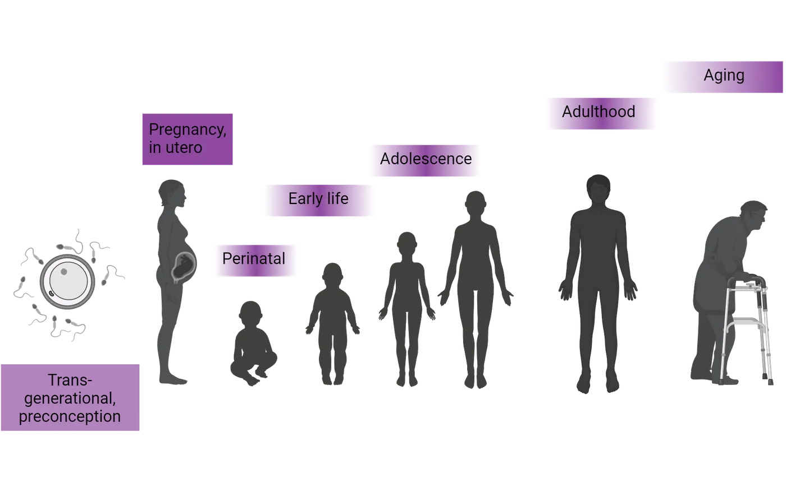
In utero
Before birth, our neurodevelopment is already being influenced by the world around us. Many studies of prenatal stress come from retrospective studies where a mother has experienced a disaster, for example war, malnutrition, hardship in personal relationships, or tensions in their everyday environment. Many of these retrospective studies have focused on historical events, for example, a year of extreme food shortage in the Netherlands during World War II, known as the Dutch famine, or more recently the events in New York City on September 11, 2001, also known as the 9/11 attacks, which affected women at different stages of pregnancy.
As we know, stress exposure elicits an HPA axis and neural response. Although the placenta acts as a selective barrier, some stress hormones produced by the mother can cross through the placenta and reach the fetus, triggering release of additional stress hormones (Weinstock, 2005). Evidence suggests that maternal stress exposure is associated with shorter gestational age, increase in preterm births, low birthweight, and small size for gestational age (Class et al., 2011). This exposure to maternal stress and high cortisol levels can also lead to deficits in mental development scores and cognitive ability once a fetus matures into childhood (Brouwers et al., 2001; Bergman et al., 2010). It is also associated with autistic traits and ADHD behaviors (Ronald et al., 2011), emotional problems (O'Connor et al., 2002), and higher cortisol response to a stressor (Davis et al., 2011). Animal models show that maternal stress alters HPA axis function, cortisol, and CRH levels throughout the lifetime of the offspring (Weinstock, 2008). Thus, the effects of maternal stress hormones can alter neurodevelopment in the fetus and contribute to adverse consequences throughout life.
Early life stress
Exposure to stress that occurs in the timeframe from infancy to adolescence, can also have a major impact on the trajectory of development. During this period, stress can come from maltreatment, neglect, or exposure to trauma or stressful life events (see Introduction). Early life stress can increase the risk of developing psychiatric disorders in adulthood (Carr et al., 2013), for example depression and anxiety (Heim and Nemeroff, 2001). It can also increase the likelihood of developing alcohol or drug dependence (Enoch, 2011). In rodents and primates, early life stress can evoke depression-like behaviors and altered HPA axis responsiveness that lasts into adulthood (Pryce et al., 2005).
Epigenetics, the chemical modification of DNA without a change in nucleotide sequence, can account for a major part of the developmental trajectory following stress. To understand this idea of epigenetic modification, we first need to appreciate how DNA is packed into the nucleus. The DNA contained in each cell’s nucleus is not lying about like loose spaghetti. It is actually packed together quite purposefully, folded and wrapped around on itself and around proteins called histones so that the ~3 billion nucleotide base pairs that make up the human genome can fit into the cramped quarters of the nucleus. Epigenetic changes are chemical modifications attached to the DNA itself or to the histones that the DNA wraps around. These modifications change how loosely or tightly the DNA is packed. Genes that are in stretches of DNA that are packed up especially tightly are less readily expressed (transcribed into RNA) while genes in segments of DNA that are packed more loosely are accessible and more easily transcribed.
Early life stress has been shown to induce changes in the epigenome, specifically in genes that regulate the HPA axis, which persist throughout life and can modulate HPA axis and stress reactivity. For example, the quality of maternal care during the neonatal period—modeled in rodents as increased pup licking and grooming by rat mothers—results in epigenetic modifications that enhance feedback sensitivity and efficient HPA axis shutdown following stress. See Feature Box on the persistent effect of maternal care on stress vulnerability and resilience. Similarly, early life stress (duration of maternal separation, for example) has been shown to induce changes in the epigenome that persist throughout life and can confer either vulnerability or resilience to stress. Additionally, recent research is beginning to uncover how transgenerational effects (i.e., events experienced by previous generations) can modulate individual variability in stress responses. See Feature Box on preconceptional, historical and transgenerational effects of stress.
Adolescence
The transition from childhood to adolescence represents another vulnerable period to stress exposure. Internally, dramatic physiological and hormonal changes occur (see Introduction). At the same time, the development of complex behaviors, including a notable dependence on peer relationships, as opposed to parental ones, emerges. These intense changes combined with high brain plasticity makes adolescence a crucial period in development where vulnerability is heightened. Exposure to stress during this period has been shown to increase the risk for depression and is associated with social and educational impairments (Fletcher, 2010).
Aging
In aging populations, changes in the brain and in the endocrine system occur in some, but not all individuals. A particularly vulnerable part of the brain to the aging process is the hippocampus. During aging, a decrease in hippocampal function and reactivity to cortisol leads to a decrease in the efficient shut down of HPA axis activation. This is seen in some aged individuals as hyper-reactivity to stress, resulting in higher levels of baseline and stress-related cortisol, and a deficient shutdown of activation. This is a vicious cycle for the aging hippocampus, as the increased levels of cortisol lead to increased neurodegeneration, cellular vulnerability and memory decline, which contributes to greater effects from stressors and could be at least partially responsible for aging the hippocampus (Miller and O’callaghan, 2005).
Biological sex differences
Sex differences in stress responses have garnered significant attention within the field of neuroscience and psychology. Numerous studies have demonstrated that males and females exhibit distinct patterns of physiological and behavioral responses when faced with stressful situations. These differences extend to both acute and chronic stressors, with variations in stress hormone secretion, neural activation, and coping strategies. For example, rodent studies have shown that females exhibit unique patterns in the number, distribution, membrane trafficking, and signaling of CRH receptors (Bangasser and Wiersielis, 2018) - patterns which are affected by estrogen. Similarly, female rats are known to release higher levels of glucocorticoids after acute restraint stress (Goel et al., 2014). These differences point to nuanced, sex-specific HPA axis function in response to stress.
At the behavioral level, studies have shown, for example, that female rodents generalize fear responses more than males (see Introduction). Fear generalization occurs when conditioned fear responses ‘spread’ (or generalize) to new stimuli. This effect is dependent upon estrous cycle phase and thus has been linked to sex hormone, specifically estrogen signaling. Although stress is thought to affect fear learning-related brain regions similarly in males and females, distinct molecular and gene expression profiles at the synaptic level are sex-specific. Understanding these types of differences will allow us to develop more tailored and effective interventions. Women, for example, have higher prevalence of PTSD which involves aberrant fear conditioning, fear generalization and a lack of proper fear-extinction. For review, see Fleischer and Frick, 2023.
A main challenge in the field is the difficulty of setting up experimental designs that represent true sex differences using animal models. For example, some rodent models like social defeat stress are based on behaviors mainly exhibited by males. Thus, it has been challenging to examine stress responses using the same set of stressors and behavioral assays in animals of different sexes.
Stress perception, appraisal, and reappraisal
Appraisal of a stressor, whether a person perceives it as harmful or a positive, challenging experience, can dramatically change the stress response. Interestingly, an individual’s response to stress seems to have a strong inherent or innate component. In humans, for example, an individual’s genetic and environmental/epigenetic makeup affects their processing and perception of stress (i.e., positive or negative valence attributed to a stressor) such that individuals respond differently to the same stressor. A study by Forkosh et al., 2019 identified four stable ‘personality types’ in mice (termed identity domains) based on unbiased behavioral tracking which persisted through time, developmental stages and stressful changes in their social environment. These ‘personality types’ corresponded to specific patterns of gene expression in the insular cortex, mPFC and amygdala.
Numerous studies have found that individuals who perceive stress as having a negative impact on their health suffer more serious health problems, including premature death (Keller et al., 2012; Nabi et al., 2013). Not surprisingly, abnormal patterns of appraisal are seen in various stress-related psychopathologies. The good news is that the stress response can be changed by reframing it as helpful. As mentioned in What Is Stress?, a study by Jamieson et al. (Jamieson et al., 2012) tested whether reappraisal of stress-induced arousal (for example, a ‘racing’ heart) as helpful and adaptive, as opposed to harmful, could improve physiological and cognitive outcomes. The results showed that participants in the reappraisal group displayed a more adaptive physiological response (improved cardiovascular functioning), reported higher levels of perceived resources and showed decreased attentional bias for emotionally negative information. That is, they dealt much better with the stressful situation even when the reappraisal training consisted of brief instructional materials. Notice that the reappraisal intervention did not change the actual increased physiological arousal caused by the stressor; it is not an intervention aimed at decreasing or dampening arousal. What changed was the ‘rethinking’ of what that arousal means (whether it’s positive versus negative) and that is what ultimately influenced the measured outcomes. Neuroimaging studies have shown that reappraisal is associated with activation of frontal cortical areas (i.e., regions regulating executive functions) like the dorsal anterior cingulate cortex and medial PFC (Kalisch, 2009).
Stress predictability and controllability in animal models
To understand the molecular mechanisms underlying appraisal, we must turn to animal models. However, animals cannot report if they are ‘reappraising’ a stressful situation, thus, we must examine whether things like predictability or controllability over the stressor can change their response. Experiments have shown that rodents exposed to stressors that were not predictable had significantly higher and longer glucocorticoid responses than those presented with a regularly scheduled stressor. Similarly, the work of Steven Maier’s group at the University of Colorado Boulder has shown that controllability (a rat controls the cessation of a presented stressor by turning a wheel, for example) alters the neural and behavioral response, but doesn’t change the HPA axis output. Animals receiving the exact same stressor (i.e., amount, intensity, and duration of an electrical shock) but who differed on whether they could terminate the shock or not, displayed similar HPA axis activation but dramatically different behavioral responses. Animals that could not stop the shock (uncontrollable stress) later failed to learn to escape in a different context, were afraid of new things, were less dominant, showed less social interactions, and had exaggerated responses to drugs of abuse (see Controllable stress in rodents).
![Diagram of rats in a controllable stress paradigm. All mice are in a cage alone, with an exercise wheel available. All mice are also connected to a wire. The wire is connected to a shock controller in the escapable and inescapable condition, but not in the no-stress control condition. In escapable shock, the animal can stop the tail shock by turning a wheel. The wheel is shown to have a wire connecting it to the shock control. The inescapable shock animal receives the same shocks (amount, intensity, duration) as the escapable shock animal, but the wheel does nothing (and it has no wired connection). No stress controls are exposed to the testing chamber, but do not receive any shocks.](../assets/textbook/img/Image-12.23_Controllable-stress-in-rodents.webp)
A large amount of work has gone into understanding the neural circuitry of this behavioral difference. Studies have found that uncontrollable stress produces robust activity in the dorsal raphe nucleus which increases release of serotonin, amygdala activation, and development of learned helplessness. Exposure to controllable stress, however, activates the medial PFC which inhibits dorsal raphe nucleus activation and blocks the negative behavioral outcomes (Amat et al., 2005; Amat et al., 2006).
Social support and buffering of the stress response
Many social animals display an interesting characteristic: when together with a conspecific they show dampened stress responses and better recovery from stressful experiences. This phenomenon is called social buffering and it has been observed in numerous species including rodents, felines, birds, nonhuman primates and humans.
Candidate molecular mediators of social buffering
Not much is known about the molecular mechanisms or neural pathways mediating the effects of social buffering. A candidate molecular mediator is the neuropeptide oxytocin—which is known for its role in social affiliative behaviors in many mammalian species.
Although no direct mechanism has been established, evidence suggests that oxytocin is released in response to stress, is associated with social/affiliative interactions after stress and can decrease HPA axis activation (via inhibition of CRH activation and ACTH and corticosteroid release), as well as SNS responses (Taylor, 2002). Additional mediators involved in stimulating and regulating the effects of social support include norepinephrine/noradrenaline, prolactin, vasopressin, serotonin and endogenous opioids.
Brain regions involved in social buffering
In humans, a study by Eisenberger et al., (Eisenberger et al., 2007) found that greater social support and decreased cortisol responses to a social stressor were associated with decreased activity in the dorsal anterior cingulate cortex (dACC) and prefrontal cortex (PFC)—brain regions that have been linked to social distress. A recent study in adolescent mice also points to a role for the PFC. In this study, social support (the presence of a mouse attempting to free a restrained mouse) blocked the negative effects of restraint stress on working memory, memory consolidation and retrieval. These stress-alleviating effects were dependent upon inhibition of stress-induced signaling cascades and normalization of stress-induced gene expression changes in the PFC (Kim et al., 2018).
Stress drives social affiliation
Social buffering is encouraged by the fact that, in many social species, stress directly promotes behaviors that will increase social interaction. Thus, stress and social buffering can form a loop, where stress drives affiliative behaviors, which in turn reduce the experience of stress (see Stress-social behavior interaction). For example, moderate stress is associated with increased affiliative behaviors in rats. A study by Muroy et al (Muroy et al., 2016) found that moderate stress exposure increased affiliative behaviors (huddling/affiliative contact, better sharing of a water resource, improved homecage stability (dominance rank) and oxytocin signaling). When the stress was made more severe by addition of predator odor, however, oxytocin signaling was reduced and the positive social effects were eliminated. These findings suggest that even the drive for affiliation by stress may follow an inverted-U pattern.
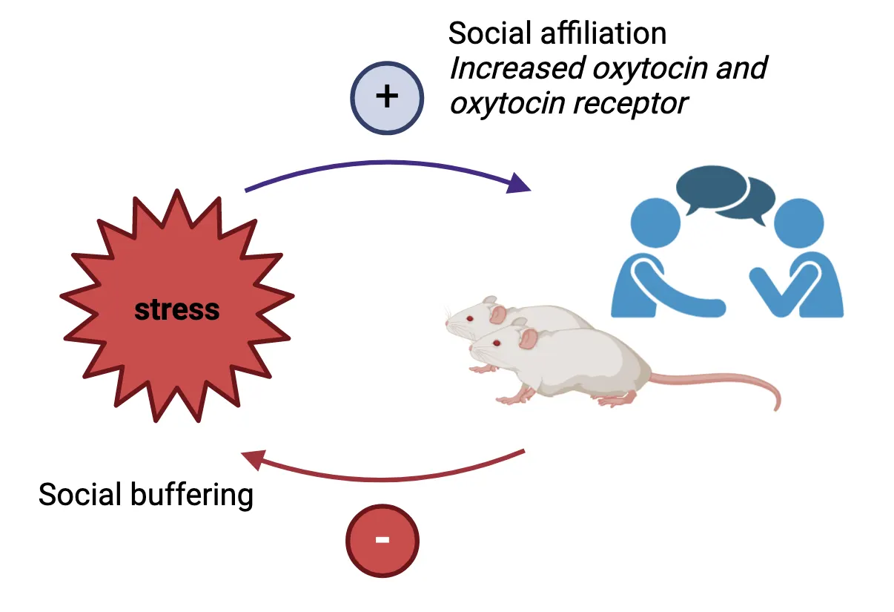
In humans, acute stress has also been shown to increase affiliative interactions and prosocial behavior. For example, increased time interacting and higher group cohesion were observed in study participants awaiting an electrical shock versus groups awaiting a mildly embarrassing or ambiguous stimulus (Morris et al., 1976). In terms of prosocial behavior, participants exposed to a socioevaluative stressor (the TSST) showed greater trust and sharing in interactive games with monetary stakes (von Dawans et al., 2012). Importantly, affiliative social interactions, for example, contact with a friend or other supportive person during times of stress can decrease sympathetic reactivity and cortisol levels, facilitating recovery. This, in turn, can positively influence health and life expectancy (for review see House et al., 1988; Taylor, 2011). Lack of social connection (e.g. social isolation), on the other hand, can increase HPA axis and SNS activity and is a major risk factor for stress-related psychiatric conditions like depression and anxiety.
Summary of factors affecting interindividual variability in the stress response
Summary of factors affecting interindividual variability in the stress response shows a summary of the factors discussed in this section. Factors and their associated brain regions are displayed at the top. Some brain regions are attuned to various factors. For example, the reward system is sensitive to predictability (i.e., novelty), controllability and duration of a stressor. The frontal cortex is similarly attuned to duration, controllability and stressor predictability, and additionally mediates stressor appraisal; the stress dampening effects of social support are integrated here as well. Brainstem regions, the circumventricular organs and the limbic system are attuned to stressor type and the physiological state of the organism (metabolic, inflammatory state, for example), which can influence an individual’s perception of stress.
![Large multi-part diagram. Top shown a sagittal midline view of a human brain with structures labeled in a circular pattern around the brain, clockwise from ~8 o’clock to 4 o’clock: Circumventricular organs, brainstem, limbic system, insular cortex, frontal cortex (prefrontal cortex, dorsal anterior cingulate cortex), reward system (ventral tegmental area, nucleus accumbens, serotonergic system (dorsal raphe nuclei), insular cortex, amygdala, hippocampus. Outside of those brain regions, are stressor components, clockwise from ~8 o’clock to 4 o’clock: Physiological state (metabolic, inflammatory state), type (physical, psychological/social), severity (mild, moderate, severe), Duration (acute, subchronic, chronic), predictability (predictable, novel), controllability, appraisal, individual differences (genetics, epigenetics, life history, biological sex). This circular array feeds down on Stress mediators: Neural (sympathetic nervous system, catecholamines, neuropeptides) and Endocrine (hypothalamic pituitary adrenal system, hormones, peptides). Those mediators feed down on specific targets: organs/tissues, cell populations (e.g. immune). Those targets feed down on “fine tuned stress response.”](../assets/textbook/img/Image-12.35_Summary-of-factors-affecting-interindividual-variability-in-the-stress-response.webp)
The brain assimilates both external and internal inputs and constructs a ‘grid’ of brain activity specific for each stressor. This pattern of brain activity varies 1) between individuals (due to individual differences based on genetics, epigenetics, life history events, biological sex, emotional and physiological state, etc.) and 2) between different stressors. The response is then integrated at the level of the hypothalamus and specific brainstem nuclei to produce fine-tuned neural and endocrine outputs that are designed to deal with the specific challenge. For example, stressors that exert metabolic pressure (hypoglycemia) induce secretion of growth hormone from the pituitary gland (Jezova et al., 2007) while stressors that elicit pain activate pain relief pathways. The severity of the painful stressor further fine-tunes which type of pain relief pathway is activated: opioid versus non-opioid. Exposure to heat or cold stress requires activation of brown fat to restore internal body temperature, while encountering a mountain lion requires priming of the immune system in case of injury. For the latter two examples, specificity is mediated by differential activation of sympathetic fibers in adipose tissue and the spleen (an immune organ) respectively, in response to different types of physical stressors (Iriki and Simon, 2012). SNS peripheral nerve terminals can also co-secrete various neuropeptides that further fine tune the generic stress response.
Thus, the type of neural activation (e.g., which SNS fibers), variety of secreted factors, their concentration and different combinations diversify the stereotypical neural and endocrine stress response. Moreover, even secretion of the canonical stress hormones ACTH and corticosterone depend on the stressor context. For example, lactating female rats caring for a litter generally show blunted ACTH and glucocorticoid responses to common laboratory stressors. However, if the stressor involves danger to the pups (inclusion of predator odor or a male intruder in the home cage), then plasma levels of ACTH and glucocorticoids rise significantly (Deschamps et al., 2003). In this example, the organism’s physiological state is also an important factor. For in depth review, see Haykin and Rolls, 2021.
Resilience
Resilience is the capacity to adapt following adversity. It is not a fixed trait—it can change throughout life and is multidimensional: for example, a person can be resilient to injury but not to psychological stress. The inverted-U curve can be used to understand how stress responsivity (vulnerability or resilience) varies between individuals (Sapolsky, 2015). For example, the curve can be right- or left-shifted along the x-axis (see the blue and orange curves in Interindividual variability in the stress response).
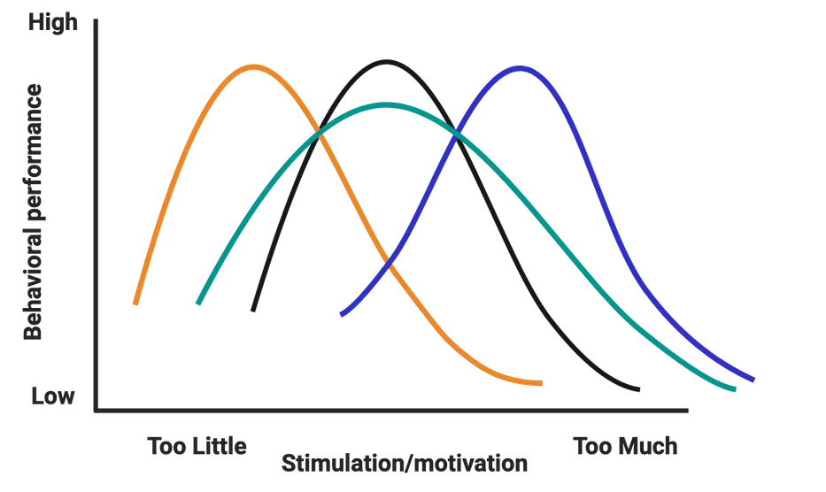
The ‘right’ amount of stress (eustress) that yields optimum function for the person with the blue curve is much higher than that for the person with the orange curve. This optimal level will also vary in different domains for the same person and for the same person at different points in time (intraindividual variability). Curves could also be flattened (wider; see green curve). The individual with the green curve would require really low or really high HPA axis activation for it to be detrimental to their function.
Little is known about the mechanisms that shift inverted-U curves to the right, that is, towards resilience. Most resilience studies have been done at the group level and few have focused on individuals, i.e., those who respond (are vulnerable) versus those that don’t respond (are resilient) to stress. Additionally, does resilience mean that there was no change or a lack of molecular response? Or was there a protective response that helped resilient individuals bounce back? The answer seems to point to the latter, but the mechanisms are yet mostly unknown.
How to optimize the stress response
How can we optimize our response to stress? That is, modulate it towards eustress versus distress? As mentioned before, reappraisal of a (mild-moderate) stressor as an adaptive challenge can improve physiological and cognitive stress outcomes. We can also engage in exercise—a physical stressor—which can enhance our adaptive capacity and has been shown to have numerous beneficial effects on stress responses. Exercise produces in the short-term feelings of calmness and reduced anxiety and can lead to long-lasting adaptations in neuroendocrine/HPA axis function after chronic training. It has reported antidepressant effects and has been shown to increase overall resilience, well-being and healthspan. Acute vigorous exercise increases levels of endogenous cannabinoids in the bloodstream (see Introduction). These neurotransmitters are similar to compounds found in cannabis (marijuana) and may mediate post-exercise feelings of calm, reduced anxiety and sometimes euphoria, colloquially referred to as a ‘runner’s high’ (Raichlen et al., 2013; Volkow et al., 2017). Training over several weeks attenuates resting/basal levels of stress hormones (Hackney, 2006). Furthermore, the stress-attenuating effects of chronic exercise training seem to carry over into reduced stress responses to other life stressors (Traustadóttir et al., 2005).
Meditation is an Eastern spiritual-associated practice that has been adapted for stress reduction and is currently a very active area of study. Research into meditation seems to point to enhanced executive control of attention (Tang et al., 2007), reduced cortisol levels (Tang et al., 2007; Fan et al., 2014) and improvements in mood (Basso et al., 2019). Note that research is limited to human subjects and correlational studies. Please see the demonstration video for an example of a short, guided meditation. To learn more about meditation research, see the work of Richard Davidson (University of Wisconsin-Madison; current leader in the field) and the Mind & Life Institute.
Finally, there are interventions like Mindfulness-based stress reduction (MBSR) (Kabat-Zinn, 2013) - an evidence-based program that combines mindfulness meditation, body awareness and examination of patterns of thought, emotion, behavior/action as tools for effectively coping with stress. MBSR has been shown to enhance attention skills, increase emotional regulation and significantly reduce rumination and worry. It has been very successfully utilized as an intervention for ameliorating anxiety, depression, and pain.
Summary
Numerous factors (genetic, epigenetic, life history, biological sex, emotional and physiological state, as well as the characteristics of the specific stressor) are involved in determining interindividual variability in response to stress. Additionally, the perception, appraisal, and predictability/controllability of stressors can profoundly affect stress reactivity and stress outcomes. Not all stress is bad, however, and some types of stress can have salutary effects on brain function. Stress can also promote social affiliation which is associated with increased health and life expectancy.
Key terms
interindividual variability, epigenetic, critical period, biological inheritance, social inheritance, ecological inheritance, appraisal/reappraisal, predictability, controllability, social buffering, resilienceReferences
Amat, J., Paul, E., Zarza, C., Watkins, L. R., & Maier, S. F. (2006). Previous experience with behavioral control over stress blocks the behavioral and dorsal raphe nucleus activating effects of later uncontrollable stress: Role of the ventral medial prefrontal cortex. The Journal of Neuroscience: The Official Journal of the Society for Neuroscience, 26(51), 13264–13272. https://doi.org/10.1523/JNEUROSCI.3630-06.2006
Amat, J., Baratta, M. V., Paul, E., Bland, S. T., Watkins, L. R., & Maier, S. F. (2005). Medial prefrontal cortex determines how stressor controllability affects behavior and dorsal raphe nucleus. Nature Neuroscience, 8(3), 365–371. https://doi.org/10.1038/nn1399
Bangasser, D. A., & Wiersielis, K. R. (2018). Sex differences in stress responses: A critical role for corticotropin-releasing factor. Hormones (Athens, Greece), 17(1), 5–13. https://doi.org/10.1007/s42000-018-0002-z
Basso, J. C., McHale, A., Ende, V., Oberlin, D. J., & Suzuki, W. A. (2019). Brief, daily meditation enhances attention, memory, mood, and emotional regulation in non-experienced meditators. Behavioural Brain Research, 356, 208–220. https://doi.org/10.1016/j.bbr.2018.08.023
Bergman, K., Sarkar, P., Glover, V., & O'Connor, T. G. (2010). Maternal prenatal cortisol and infant cognitive development: Moderation by infant-mother attachment. Biological Psychiatry, 67(11), 1026–1032. https://doi.org/10.1016/j.biopsych.2010.01.002
Brouwers, E. P., van Baar, A. L., & Pop, V. J. (2001). Maternal anxiety during pregnancy and subsequent infant development. Infant Behavior and Development, 24, 95–106.
Buescher, J. L., Musselman, L. P., Wilson, C. A., Lang, T., Keleher, M., Baranski, T. J., & Duncan, J. G. (2013). Evidence for transgenerational metabolic programming in Drosophila. Disease Models & Mechanisms, 6(5), 1123–1132. https://doi.org/10.1242/dmm.011924
Carr, C. P., Martins, C. M., Stingel, A. M., Lemgruber, V. B., & Juruena, M. F. (2013). The role of early life stress in adult psychiatric disorders: A systematic review according to childhood trauma subtypes. The Journal of Nervous and Mental Disease, 201(12), 1007–1020. https://doi.org/10.1097/NMD.0000000000000049
Class, Q. A., Lichtenstein, P., Långström, N., & D'Onofrio, B. M. (2011). Timing of prenatal maternal exposure to severe life events and adverse pregnancy outcomes: A population study of 2.6 million pregnancies. Psychosomatic Medicine, 73(3), 234–241. https://doi.org/10.1097/PSY.0b013e31820a62ce
Davis, E. P., Glynn, L. M., Waffarn, F., & Sandman, C. A. (2011). Prenatal maternal stress programs infant stress regulation. Journal of Child Psychology and Psychiatry, and Allied Disciplines, 52(2), 119–129. https://doi.org/10.1111/j.1469-7610.2010.02314.x
Davitz, J. R., & Mason, D. J. (1955). Socially facilitated reduction of a fear response in rats. Journal of Comparative and Physiological Psychology, 48(3), 149–151. https://doi.org/10.1037/h0046411
Deschamps, S., Woodside, B., & Walker, C. D. (2003). Pups presence eliminates the stress hyporesponsiveness of early lactating females to a psychological stress representing a threat to the pups. Journal of Neuroendocrinology, 15(5), 486–497. https://doi.org/10.1046/j.1365-2826.2003.01022.x
Eisenberger, N. I., Taylor, S. E., Gable, S. L., Hilmert, C. J., & Lieberman, M. D. (2007). Neural pathways link social support to attenuated neuroendocrine stress responses. NeuroImage, 35(4), 1601–1612. https://doi.org/10.1016/j.neuroimage.2007.01.038
Enoch, M. A. (2011). The role of early life stress as a predictor for alcohol and drug dependence. Psychopharmacology, 214(1), 17–31. https://doi.org/10.1007/s00213-010-1916-6
Fan, Y., Tang, Y. Y., & Posner, M. I. (2014). Cortisol level modulated by integrative meditation in a dose-dependent fashion. Stress and Health: Journal of the International Society for the Investigation of Stress, 30(1), 65–70. https://doi.org/10.1002/smi.2497
Fleischer, A. W., & Frick, K. M. (2023). New perspectives on sex differences in learning and memory. Trends in Endocrinology and Metabolism: TEM, 34(9), 526–538. https://doi.org/10.1016/j.tem.2023.06.003
Fletcher, J. M. (2010). Adolescent depression and educational attainment: Results using sibling fixed effects. Health Economics, 19(7), 855–871. https://doi.org/10.1002/hec.1526
Forkosh, O., Karamihalev, S., Roeh, S., Alon, U., Anpilov, S., Touma, C., Nussbaumer, M., Flachskamm, C., Kaplick, P. M., Shemesh, Y., & Chen, A. (2019). Identity domains capture individual differences from across the behavioral repertoire. Nature Neuroscience, 22(12), 2023–2028. https://doi.org/10.1038/s41593-019-0516-y
Goel, N., Workman, J. L., Lee, T. T., Innala, L., & Viau, V. (2014). Sex differences in the HPA axis. Comprehensive Physiology, 4(3), 1121–1155. https://doi.org/10.1002/cphy.c130054
Hackney, A. C. (2006). Stress and the neuroendocrine system: The role of exercise as a stressor and modifier of stress. Expert Review of Endocrinology & Metabolism, 1(6), 783–792. https://doi.org/10.1586/17446651.1.6.783
Haykin, H., & Rolls, A. (2021). The neuroimmune response during stress: A physiological perspective. Immunity, 54(9), 1933–1947. https://doi.org/10.1016/j.immuni.2021.08.023
Heim, C., & Nemeroff, C. B. (2001). The role of childhood trauma in the neurobiology of mood and anxiety disorders: Preclinical and clinical studies. Biological Psychiatry, 49(12), 1023–1039. https://doi.org/10.1016/s0006-3223(01)01157-x
House, J. S., Landis, K. R., & Umberson, D. (1988). Social relationships and health. Science (New York, N.Y.), 241(4865), 540–545. https://doi.org/10.1126/science.3399889
Iriki, M., & Simon, E. (2012). Differential control of efferent sympathetic activity revisited. The Journal of Physiological Sciences: JPS, 62(4), 275–298. https://doi.org/10.1007/s12576-012-0208-9
Jamieson, J. P., Nock, M. K., & Mendes, W. B. (2012). Mind over matter: Reappraising arousal improves cardiovascular and cognitive responses to stress. Journal of Experimental Psychology: General, 141(3), 417–422. https://doi.org/10.1037/a0025719
Jezova, D., Radikova, Z., & Vigas, M. (2007). Growth hormone response to different consecutive stress stimuli in healthy men: Is there any difference? Stress (Amsterdam, Netherlands), 10(2), 205–211. https://doi.org/10.1080/10253890701292168
Kabat-Zinn, J. (2013). Full catastrophe living: Using the wisdom of your body and mind to face stress, pain, and illness (Revised and updated edition). Bantam Books trade paperback.
Kalisch, R. (2009). The functional neuroanatomy of reappraisal: Time matters. Neuroscience and Biobehavioral Reviews, 33(8), 1215–1226. https://doi.org/10.1016/j.neubiorev.2009.06.003
Keller, A., Litzelman, K., Wisk, L. E., Maddox, T., Cheng, E. R., Creswell, P. D., & Witt, W. P. (2012). Does the perception that stress affects health matter? The association with health and mortality. Health Psychology: Official Journal of the Division of Health Psychology, American Psychological Association, 31(5), 677–684. https://doi.org/10.1037/a0026743
Kim, J. W., Ko, M. J., Gonzales, E. L., Kang, R. J., Kim, D. G., Kim, Y., Seung, H., Oh, H. A., Eun, P. H., & Shin, C. Y. (2018). Social support rescues acute stress-induced cognitive impairments by modulating ERK1/2 phosphorylation in adolescent mice. Scientific Reports, 8(1), 12003. https://doi.org/10.1038/s41598-018-30524-4
Klosin, A., Casas, E., Hidalgo-Carcedo, C., Vavouri, T., & Lehner, B. (2017). Transgenerational transmission of environmental information in C. elegans. Science (New York, N.Y.), 356(6335), 320–323. https://doi.org/10.1126/science.aah6412
Liu, D., Diorio, J., Tannenbaum, B., Caldji, C., Francis, D., Freedman, A., Sharma, S., Pearson, D., Plotsky, P. M., & Meaney, M. J. (1997). Maternal care, hippocampal glucocorticoid receptors, and hypothalamic-pituitary-adrenal responses to stress. Science (New York, N.Y.), 277(5332), 1659–1662. https://doi.org/10.1126/science.277.5332.1659
Measserman, J. H. (1943). Behavior and neurosis. University of Chicago Press.
Miller, D. B., & O'Callaghan, J. P. (2005). Aging, stress and the hippocampus. Ageing Research Reviews, 4(2), 123–140. https://doi.org/10.1016/j.arr.2005.03.002
Morris, W. N., Worchel, S., Bios, J. L., Pearson, J. A., Rountree, C. A., Samaha, G. M., Wachtler, J., & Wright, S. L. (1976). Collective coping with stress: Group reactions to fear, anxiety, and ambiguity. Journal of Personality and Social Psychology, 33(6), 674–679. https://doi.org/10.1037//0022-3514.33.6.674
Muroy, S. E., Long, K. L., Kaufer, D., & Kirby, E. D. (2016). Moderate stress-induced social bonding and oxytocin signaling are disrupted by predator odor in male rats. Neuropsychopharmacology: Official Publication of the American College of Neuropsychopharmacology, 41(8), 2160–2170. https://doi.org/10.1038/npp.2016.16
Nabi, H., Kivimäki, M., Batty, G. D., Shipley, M. J., Britton, A., Brunner, E. J., Vahtera, J., Lemogne, C., Elbaz, A., & Singh-Manoux, A. (2013). Increased risk of coronary heart disease among individuals reporting adverse impact of stress on their health: The Whitehall II prospective cohort study. European Heart Journal, 34(34), 2697–2705. https://doi.org/10.1093/eurheartj/eht216
O'Connor, T. G., Heron, J., Golding, J., Beveridge, M., & Glover, V. (2002). Maternal antenatal anxiety and children's behavioural/emotional problems at 4 years. Report from the Avon Longitudinal Study of Parents and Children. The British Journal of Psychiatry: The Journal of Mental Science, 180, 502–508. https://doi.org/10.1192/bjp.180.6.502
Perroud, N., Rutembesa, E., Paoloni-Giacobino, A., Mutabaruka, J., Mutesa, L., Stenz, L., Malafosse, A., & Karege, F. (2014). The Tutsi genocide and transgenerational transmission of maternal stress: Epigenetics and biology of the HPA axis. The World Journal of Biological Psychiatry: The Official Journal of the World Federation of Societies of Biological Psychiatry, 15(4), 334–345. https://doi.org/10.3109/15622975.2013.866693
Pryce, C. R., Rüedi-Bettschen, D., Dettling, A. C., Weston, A., Russig, H., Ferger, B., & Feldon, J. (2005). Long-term effects of early-life environmental manipulations in rodents and primates: Potential animal models in depression research. Neuroscience and Biobehavioral Reviews, 29(4-5), 649–674. https://doi.org/10.1016/j.neubiorev.2005.03.011
Raichlen, D. A., Foster, A. D., Seillier, A., Giuffrida, A., & Gerdeman, G. L. (2013). Exercise-induced endocannabinoid signaling is modulated by intensity. European Journal of Applied Physiology, 113(4), 869–875. https://doi.org/10.1007/s00421-012-2495-5
Rechavi, O., Houri-Ze'evi, L., Anava, S., Goh, W. S. S., Kerk, S. Y., Hannon, G. J., & Hobert, O. (2014). Starvation-induced transgenerational inheritance of small RNAs in C. elegans. Cell, 158(2), 277–287. https://doi.org/10.1016/j.cell.2014.06.020
Ronald, A., Pennell, C. E., & Whitehouse, A. J. (2011). Prenatal maternal stress associated with ADHD and autistic traits in early childhood. Frontiers in Psychology, 1, 223. https://doi.org/10.3389/fpsyg.2010.00223
Sapolsky, R. M. (2015). Stress and the brain: Individual variability and the inverted-U. Nature Neuroscience, 18(10), 1344–1346. https://doi.org/10.1038/nn.4109
Tang, Y. Y., Ma, Y., Wang, J., Fan, Y., Feng, S., Lu, Q., Yu, Q., Sui, D., Rothbart, M. K., Fan, M., & Posner, M. I. (2007). Short-term meditation training improves attention and self-regulation. Proceedings of the National Academy of Sciences of the United States of America, 104(43), 17152–17156. https://doi.org/10.1073/pnas.0707678104
Taylor, S. E. (2002). The tending instinct: How nurturing is essential for who we are and how we live. Times Books.
Taylor, S. E. (2011). Social support: A review. In H. S. Friedman (Ed.), The Oxford Handbook of Health Psychology (pp. 189–214). Oxford University Press.
Traustadóttir, T., Bosch, P. R., & Matt, K. S. (2005). The HPA axis response to stress in women: Effects of aging and fitness. Psychoneuroendocrinology, 30(4), 392–402. https://doi.org/10.1016/j.psyneuen.2004.11.002
Volkow, N. D., Hampson, A. J., & Baler, R. D. (2017). Don't worry, be happy: Endocannabinoids and cannabis at the intersection of stress and reward. Annual Review of Pharmacology and Toxicology, 57, 285–308. https://doi.org/10.1146/annurev-pharmtox-010716-104615
von Dawans, B., Fischbacher, U., Kirschbaum, C., Fehr, E., & Heinrichs, M. (2012). The social dimension of stress reactivity: Acute stress increases prosocial behavior in humans. Psychological Science, 23(6), 651–660. https://doi.org/10.1177/0956797611431576
Weaver, I. C., Cervoni, N., Champagne, F. A., D'Alessio, A. C., Sharma, S., Seckl, J. R., Dymov, S., Szyf, M., & Meaney, M. J. (2004). Epigenetic programming by maternal behavior. Nature Neuroscience, 7(8), 847–854. https://doi.org/10.1038/nn1276
Weinstock, M. (2005). The potential influence of maternal stress hormones on development and mental health of the offspring. Brain, Behavior, and Immunity, 19(4), 296–308. https://doi.org/10.1016/j.bbi.2004.09.006
Weinstock, M. (2008). The long-term behavioural consequences of prenatal stress. Neuroscience and Biobehavioral Reviews, 32(6), 1073–1086. https://doi.org/10.1016/j.neubiorev.2008.03.002
Yehuda, R., & Bierer, L. M. (2008). Transgenerational transmission of cortisol and PTSD risk. Progress in Brain Research, 167, 121–135. https://doi.org/10.1016/S0079-6123(07)67009-5
Yehuda, R., Daskalakis, N. P., Bierer, L. M., Bader, H. N., Klengel, T., Holsboer, F., & Binder, E. B. (2016). Holocaust exposure induced intergenerational effects on FKBP5 methylation. Biological Psychiatry, 80(5), 372–380. https://doi.org/10.1016/j.biopsych.2015.08.005
Zannas, A. S., Wiechmann, T., Gassen, N. C., & Binder, E. B. (2016). Gene-stress-epigenetic regulation of FKBP5: Clinical and translational implications. Neuropsychopharmacology: Official Publication of the American College of Neuropsychopharmacology, 41(1), 261–274. https://doi.org/10.1038/npp.2015.235
Practice The multiple-choice and fill-in-the-blank questions for this section are interactive and live on OpenStax, so they are not carried here: open the book on openstax.org.
12.4Clinical Implications of Stress
By the end of this section, you should be able to
- Define allostatic (over)load and explain its consequences
- Describe the pathological effects of stress exposure and some of its clinical implications
- Describe the role of microglia in stress-related mood and neurodegenerative disorders
The cumulative ‘wear and tear’ from prolonged or severe stress exposure can tax our adaptive systems predisposing us to pathology and stress-related disorders. In this section, we will learn more about the concept of allostatic (over)load, which describes what can happen when stress becomes ‘too much’. We will also discuss common stress-related nervous system disorders and the role of microglia, the brain’s resident immune cells.
Allostasis vs. allostatic (over)load
We now know that the stress response is a necessary, survival-promoting response that allows us to adapt to challenges. What happens, however, if this response is activated for too long or too often, as a result of repeated exposure to stressors, or lack of proper shut down?
Well, it’s very much the continuation of the beneficial, life-saving aspects of stress that become detrimental when they are prolonged or chronic (inverted-U nature of the response). Think about the acute effects of stress. For example, you are confronted with a stressor and your blood pressure increases because that is what’s needed in order to run away from the threat. But, if your blood pressure is increased constantly, that becomes your new set point and now you have hypertension. Hypertension is a disease that affects most organ systems in the body. In the long-term, it increases wear and tear on many systems and accelerates the aging process. Other bodily systems are similarly affected. The immune and reproductive systems are turned down leading to immune suppression and reproductive distress/dysfunction. In the digestive tract, you can develop ulcers and decreased nutrient absorption. If the excessive stress exposure came early on in life, it can result in stunted growth. In terms of metabolism, glucose thrown into the bloodstream helps the muscles in the short run (escaping the threat) but can lead to diabetes if chronic. Similarly, in the brain, prolonged or severe stress exposure can lead to regional changes in brain structure (dendritic hypo/hypertrophy, remodeling, circuit plasticity) that can alter brain function and lead to pathologies such as anxiety, depression, and PTSD.
Recall that allostasis refers to the processes that restore homeostasis and also allow us to adapt through change. Our body’s activation of the nervous, endocrine (and immune) systems during a stress response, for example, are allostatic mechanisms that allow us to adjust and increase our resilience in the face of stress. Allostatic (over)load, on the other hand, is the physiological cost of that adaptation to our body, i.e., the ‘wear and tear’ that accumulates after repeated or chronic stress exposure (see Allostatic overload).
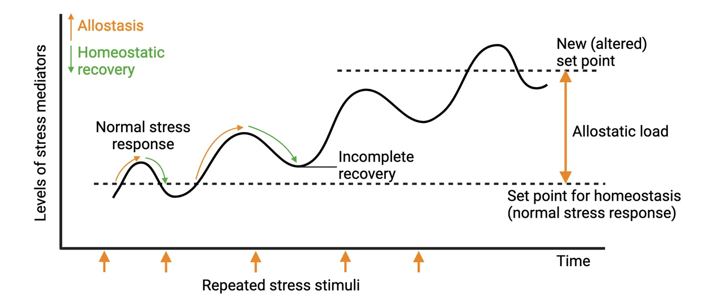
Types of allostatic (over)load include:
- Frequent activation of allostatic systems: e.g., repeated hits from multiple stressors resulting in overexposure to stress hormones.
- Lack of adaptation to a repeated stressor: e.g., not getting used to public speaking.
- Failure to shut off stress response activation after the stressor has passed: i.e., the inability to efficiently shutoff the stress response resulting in overexposure to stress hormones.
- Failure to adequately activate the stress response: e.g., an inability to mount the proper HPA activation.
Ultimately, continual or chronic stress exposure results in allostatic (over)load. Allostatic (over)load serves no useful function and can predispose individuals to stress-related disorders and pathology. Some of the clinical consequences are discussed below.
Mood disorders
Mood disorders are often accompanied by a distorted or inconsistent emotional state that persistently interferes with the ability to function. The American Psychiatric Association’s Diagnostic and Statistical Manual of Mental Disorders Fifth Edition (DSM-5) categorizes several disorders as part of mood disorders including major depressive disorder (MDD), bipolar disorder, and others. Many studies have implicated that both acute and chronic stress are related to the onset of MDD (McEwen, 2004). One potential mechanism connecting stress and mood disorders is dysregulation of the neurotransmitter serotonin. Serotonin is a crucial neurotransmitter for mood regulation in the brain (see Introduction). Chronic stress is known to modulate neurotransmitters linked to mood disorders and their receptors. For instance, chronic stress reduces 5-HT1A autoreceptor sensitivity in the dorsal raphe nucleus—the brainstem nucleus where serotonergic cell bodies are located (Chaouloff et al., 1999). Although 5-HT1A receptors are not actively engaged in anti-depressant drug effects, the receptors are well-known for regulating the entire serotonergic system. Furthermore, an increase in stress hormones due to hyperactivity of the HPA axis has been shown to elevate expression of the gene encoding the serotonin reuptake transporter—a main target of major anti-depressant drugs, which inhibit the transporter’s ability to reuptake/remove serotonin from synapses (Tafet et al., 2001). It is notable that dysregulation of serotonin homeostasis during critical periods (in utero, childhood, adolescence) and adulthood via exposure to chronic stress and dysregulated HPA axis function may produce long-lasting changes in the brain and ultimately impact the development of (and affect treatments for) mood disorders including MDD.
Anxiety disorders
Anxiety disorders are often characterized by intense and excessive symptoms of anxiety and worry that last persistently. According to the DSM-5, there are multiple types of anxiety disorders, diagnosed based on potential causes and symptoms such as generalized anxiety disorders, social anxiety disorders, phobias, and panic disorders. One of the risk factors for anxiety disorders includes exposure to chronic stress. Chronic stress is well known to enhance amygdala-mediated fear. For example, a study by Rosekranz et al. revealed that chronic stress can activate neural excitability in the lateral amygdala circuitry (Rosenkranz et al., 2010). The amygdala circuitry is particularly important in the regulation of emotion, anxiety, and fear. Thus, heightened amygdala activation mediated by stress plays a role in the development of anxiety disorders.
Repeated and chronic exposure to stress may also result in hyperactivity of the HPA axis, which can contribute to anxiety. A subgroup of patients with anxiety disorders often displays hyperactivity of the HPA axis (Tafet and Nemeroff, 2020). Furthermore, anti-anxiety drugs, such as benzodiazepines, tricyclic antidepressants (TCAs), and selective serotonin reuptake inhibitors (SSRIs), all modulate components of the HPA axis. For instance, some types of benzodiazepines have been shown to alleviate anxiety symptoms and reduce the activity of CRH neurons in the hypothalamus, indicating the potential impact of anti-anxiety drugs on HPA axis regulation.
Posttraumatic stress disorder (PTSD)
Posttraumatic stress disorder (PTSD) is a psychiatric disorder that can develop in a subset of individuals exposed to a traumatic event (e.g., severe car accident, combat, sexual assault, natural disaster). It is characterized by persistent reexperiencing of the trauma (e.g., intrusive memories and flashbacks), avoidance of stimuli associated with the trauma and numbing of general responsiveness (similar to symptoms of depression) (see Core symptoms of PTSD).

Women are twice as likely to have PTSD than men (Kessler, 1995). Immediately following exposure to severe trauma, most individuals will present with a collection of these symptoms (i.e., will display an acute stress response). Yet, in most people, these symptoms will resolve within months. Only 15-25% of individuals will continue to show persistent symptoms a year after the traumatic event and meet the diagnostic criteria for PTSD (Yehuda et al., 1998). Thus, PTSD represents a physiological failure to recover from an acute stress response that is almost universal.
Not surprisingly, patients with PTSD display HPA axis dysregulation, but paradoxically, they show lower overall cortisol levels, especially in the hours immediately after the trauma (Mason et al., 1986; Yehuda, 2002). Additionally, they have an abnormally high noradrenaline/cortisol ratio which suggests a loss of coordinated activity between HPA axis and ANS function. Cortisol administration shortly after trauma (in ER patients exhibiting low cortisol levels) has been successful as a preventative intervention for PTSD (Zohar et al., 2011). Non-pharmacological interventions in the form of cognitive behavioral therapy, sometimes coupled with virtual reality scenarios, have also proven successful in treating the symptoms of PTSD.
Cognitive and memory disorders
Stress can affect multiple aspects of cognition including attention, learning, and memory. Some major cognitive/memory disorders in humans are Alzheimer’s disease (AD), attention deficit disorder, and dementia. Each of these is affected by stress exposure. Stress exacerbates AD (Machado et al., 2014; Justice, 2018), there’s a high comorbidity rate of PTSD with attention deficit disorder (Cuffe et al., 1994; Adler et al., 2004), and chronic stress is associated with dementia (Peavy et al., 2012) and increased risk for dementia later in life (Johansson et al., 2010). Stress-sensitive brain regions like the hippocampus and PFC likely contribute to these phenotypes.
Interestingly, PTSD can be viewed as a memory disorder, and it is easy to understand many of the symptoms via this lens. In addition to the strong recall of the traumatic event, PTSD patients report problems with declarative memory (remembering facts), fragmentation of memory and dissociative amnesia (not being able to recall important personal information). A salient feature of PTSD is an aberrant consolidation of the traumatic memory event (aberrant fear learning). It may manifest as a lack of fear extinction (new safety cues are not associated with the old memory) or a generalization of the fear response. For example, if the event was the experiencing of a bomb blast, then the result could be a sensitivity to other loud noises (Parsons and Ressler, 2013; Shalev et al., 2017; Fenster et al., 2018).
Addiction, compulsive and impulse disorders
Addiction is a compulsive behavior or use of a substance characterized by an inability to control consumption and withdrawal symptoms when unable to access it (see Introduction). Gambling and shopping are examples of behaviors that can lead to a non-substance addiction. Substance abuse is highly studied and provides the basis for what we know about stress and addiction. Stress is a prominent risk factor for developing a substance use disorder or relapsing (Schmid et al., 2009; Enoch, 2011; Duffing et al., 2014; Tschetter et al., 2022). Stress and substance use both activate the HPA axis and connected amygdala, while down-regulating activation of the hippocampus and the PFC, leading to impaired decision making and impulsivity. These similarities suggest that stress may influence and further aggravate the effects of many drugs of abuse and contribute to addiction. Therefore, reducing stress could aid in efforts to treat addictions or prevent susceptibility.
Stress and (neuro)immune function
We all know that exposure to pathogens leads to characteristic changes in physiology and behavior. When we’re sick, we feel tired and sleepy, lose motivation, withdraw socially, don’t feel as hungry or thirsty, might have a fever and our brains might feel foggy. Sometimes we might also feel more sensitive to pain or more anxious and depressed. This constellation of symptoms is called the sickness response, and it is remarkably similar to endophenotypes that characterize stress-related mood disorders like MDD, anxiety and PTSD (see Introduction). This intriguing observation hinted at the idea that neuropsychiatric conditions like mood disorders had an immune component. That is, the immune system might be involved in regulating an organism’s motivational state. This idea led to intense interest in the role of the immune system in brain function and how it relates to stress.
As we know, stress can affect every cell and tissue in the body, hence it is no surprise that it has profound effects on immune system function. In general, following the inverted-U pattern, acute stress seems to enhance immune responses while chronic stress has a suppressive effect. However, both acute and chronic stress can generate anti-inflammatory and proinflammatory responses, leading to a more complex picture. In recent years, inflammation has garnered a negative reputation, but it is in fact a necessary and beneficial immune response after an acute stressor like an injury/infection: here the immune system attacks the invaders, clears the threat and helps to promote healing. Inflammation is deleterious, however, if it becomes prolonged. Studies have shown, for example, that chronic socio-environmental stressors (poverty, bereavement) are associated with increased expression of genes involved in inflammation and decreased expression of antiviral responses—the conserved transcriptional response to adversity. This transcriptional program is thought to promote a state of chronic, low-grade inflammation which can result in development of inflammation-related diseases.
Stress and microglia—the brain’s resident immune cells
The brain, largely isolated from cells of the immune system due to the presence of the blood-brain-barrier, was long thought to be an immune-privileged organ; however, it contains its own tissue-resident immune cells: microglia. In recent years, there has been intense interest in understanding the crucial role of microglia in brain development and function.
As the resident phagocytes, microglia actively scan their environment for disruptions in homeostasis. They are first responders to threat (e.g., infection with a virus, tissue damage), play a critical role in neurodevelopment and perform numerous functions in the maintenance of the healthy adult brain. For example, they use their phagocytic activity to remove debris, dead/dying neurons and other cells. They also lend trophic (growth) support to neurons, modify synaptic connections and plasticity, and modulate neuronal activity. Additionally, because they are immunocompetent cells, microglia produce and release anti- and proinflammatory mediators (cytokines and chemokines), some of which have roles in synaptic plasticity and memory function. Microglial functions diagrams some of these cellular functions which impact brain function and development.
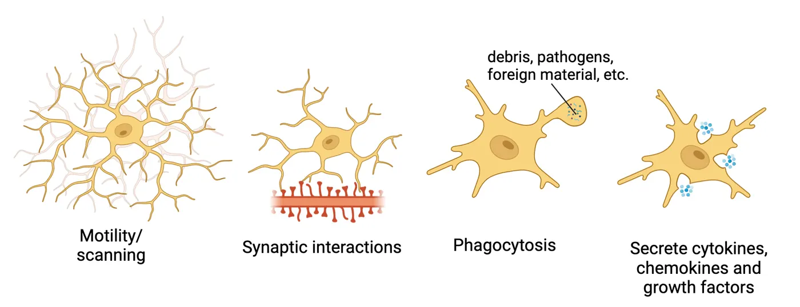
Homeostatic or surveilling microglia exhibit a highly branched morphology with a small cell body and unique transcriptional signature. This phenotype is suppressed when disruptions to CNS homeostasis occur (for example, during infection or aging). At the same time, microglia undergo changes in morphology, transcription and proinflammatory mediator profile (a spectrum of different functional states grouped under the umbrella term ‘activation’) which at the extreme becomes a phenotype characteristic of neurodegeneration. One of these activation states, termed ‘primed’, is seen in microglia under neuroinflammatory conditions like stress and aging. Microglia can also proliferate, increasing their numbers in response to homeostatic disruptions. Below, we will discuss more specifically the role of microglia in stress-related pathology with a focus on mood and cognitive dysfunction/neurodegenerative disorders.
Inflammatory priming and mood disorders
Microglia can respond directly to key stress mediators, including glucocorticoids and the catecholamines epinephrine and norepinephrine. Although glucocorticoids are widely known for their immunosuppressive effects, they can also have a more permissive role. A number of studies have implicated glucocorticoids in stress-induced inflammatory priming—that is, a sensitization or heightened immune response in microglia to subsequent inflammatory stimuli—in stress-related brain regions like the hippocampus. In other words, glucocorticoid exposure can make microglia more susceptible to a second inflammatory stimulus, and this can then trigger an exaggerated or prolonged inflammatory response that can damage nearby neurons or other cells and negatively affect brain function.
Experiments have tested the causal role of glucocorticoids in this phenomenon. For example, exposure to tailshock stress in rats where glucocorticoids signaling was blocked (via application of GR antagonists or adrenalectomy, removal of the adrenal glands) blocked this type of exaggerated inflammatory response in hippocampal microglia when subsequently stimulated with a bacterial product. Other experiments using β-adrenergic receptor agonists or antagonists and repeated social defeat stress have shown that catecholamines are also implicated in stress-induced microglial priming in regions of the brain related to threat-appraisal. Additionally, they play a critical role in the mobilization and redistribution of specific types of inflammatory peripheral immune cells to the CNS (for review see Frank et al., 2019). This type of infiltration of peripheral immune cells into the brain, along with a greater overall local inflammatory microenvironment, lead to a full-blown state of neuroinflammation.
Inflammatory priming is thought to contribute to the development of a number of mood disorders and their related symptoms. For example, microglia that have been primed by repeated stress exposure release several molecules that can directly impact emotion-related behaviors. IL-1β is one such molecule. It is a cytokine released by microglia that both contributes directly to further HPA axis activation and also drives sickness behaviors, like decreases in motivation to obtain a reward. Loss of motivation for previously rewarding stimuli is a core symptom of depressive disorders. Another protein released by stress-primed microglia, PGE2, stimulates increases in social avoidance and greater anxiety responses to stress (for review see Wolf et al., 2017). How this vicious cycle of stress and microglia function contributes to mood disorders is an active field of research which may yield new ways to treat depression and anxiety in the future.
Stress, microglia and neurodegeneration
Neurodegeneration is the age-related, progressive damage to neuronal structures and function in the CNS. It can result in disruptions to cognitive performance and is seen in disorders like Alzheimer’s disease (AD) and other dementias. Notably, a life-long history of stress exposure is a risk factor for developing cognitive deficits, brain atrophy and AD (Gracia-Garcı ́a et al., 2015, Alkadhi, 2012) and psychosocial stress, in particular, is a risk factor for late-onset AD (LOAD). Chronic stress has also been shown to worsen neurodegeneration and cognitive impairments in rodent models of AD (Carroll et al., 2011; Srivareerat et al., 2009). As discussed previously, chronic stress can lead to neuroinflammation, one of the hallmarks of many neurodegenerative disorders including AD.
Microglia play a key role in the establishment and progression of neurodegenerative disorders. Microglial dysfunction is prominent in AD, for example, and several genetic risk factors associated with the disease are specifically or highly expressed by microglia (APOE and TREM2). It is worth noting that during normal aging, microglia lose some of their surveillance/homeostatic capacity and are thought to become more proinflammatory or reactive in general. Additionally, their phagocytic function is impacted.
During neurodegeneration, microglia react to age-related, accumulated debris/protein aggregates through their dedicated pathogen and damage-sensing receptors. They also adopt an ‘extreme’ activated, primed phenotype termed MGnD (neurodegenerative microglia) or DAM (disease-associated microglia) characterized by induction of genes associated with cellular damage and degeneration. This phenotype also includes higher expression of immune modulators that induce astrocyte activation and aid in recruitment of inflammatory and other specialized immune cells that further contribute to neuronal damage. Thus, chronic stress can exacerbate neurodegeneration by compromising microglial homeostatic support for neurons/synaptic function and sensitizing microglia towards a primed state which leads to neuroinflammation and neuronal dysfunction and death. Interestingly, regions like the frontal cortex and hippocampus which are particularly sensitive to the effects of stress are also amongst the first brain areas affected in AD.
Summary
Repeated or prolonged stress can lead to allostatic over(load) resulting in stress-related pathologies like mood, anxiety, cognitive, memory, impulse control and substance abuse disorders. Exposure to traumatic stress can lead to development of PTSD. Additionally, chronic stress can drive microglial priming and neuroinflammation which exacerbates mood and cognitive disorders and contributes to neurodegeneration.
Key terms
stress-related disorders, allostatic overload, sickness response, inflammation, microglia, inflammatory priming, neuroinflammation, neurodegenerationReferences
Adler, L. A., Kunz, M., Chua, H. C., Rotrosen, J., & Resnick, S. G. (2004). Attention-deficit/hyperactivity disorder in adult patients with posttraumatic stress disorder (PTSD): Is ADHD a vulnerability factor?. Journal of Attention Disorders, 8(1), 11–16. https://doi.org/10.1177/108705470400800102
Alkadhi, K. A. (2012). Chronic psychosocial stress exposes Alzheimer's disease phenotype in a novel at-risk model. Frontiers in Bioscience (Elite Edition), 4(1), 214–229. https://doi.org/10.2741/371
Chaouloff, F., Berton, O., & Mormède, P. (1999). Serotonin and stress. Neuropsychopharmacology: Official Publication of the American College of Neuropsychopharmacology, 21(2 Suppl), 28S–32S. https://doi.org/10.1016/S0893-133X(99)00008-1
Cuffe, S. P., McCullough, E. L., & Pumariega, A. J. (1994). Comorbidity of attention deficit hyperactivity disorder and post-traumatic stress disorder. Journal of Child and Family Studies, 3(3), 327–336.
Duffing, T. M., Greiner, S. G., Mathias, C. W., & Dougherty, D. M. (2014). Stress, substance abuse, and addiction. Current Topics in Behavioral Neurosciences, 18, 237–263. https://doi.org/10.1007/7854_2014_276
Enoch, M. A. (2011). The role of early life stress as a predictor for alcohol and drug dependence. Psychopharmacology, 214(1), 17–31. https://doi.org/10.1007/s00213-010-1916-6
Frank, M. G., Watkins, L. R., & Maier, S. F. (2015). The permissive role of glucocorticoids in neuroinflammatory priming: Mechanisms and insights. Current Opinion in Endocrinology, Diabetes, and Obesity, 22(4), 300–305. https://doi.org/10.1097/MED.0000000000000168
Frank, M. G., Fonken, L. K., Watkins, L. R., & Maier, S. F. (2019). Microglia: Neuroimmune-sensors of stress. Seminars in Cell & Developmental Biology, 94, 176–185. https://doi.org/10.1016/j.semcdb.2019.01.001
Fenster, R. J., Lebois, L. A. M., Ressler, K. J., & Suh, J. (2018). Brain circuit dysfunction in post-traumatic stress disorder: From mouse to man. Nature Reviews Neuroscience, 19(9), 535–551. https://doi.org/10.1038/s41583-018-0039-7
Gracia-García, P., de-la-Cámara, C., Santabárbara, J., Lopez-Anton, R., Quintanilla, M. A., Ventura, T., Marcos, G., Campayo, A., Saz, P., Lyketsos, C., & Lobo, A. (2015). Depression and incident Alzheimer disease: The impact of disease severity. The American Journal of Geriatric Psychiatry: Official Journal of the American Association for Geriatric Psychiatry, 23(2), 119–129. https://doi.org/10.1016/j.jagp.2013.02.011
Johansson, L., Guo, X., Waern, M., Ostling, S., Gustafson, D., Bengtsson, C., & Skoog, I. (2010). Midlife psychological stress and risk of dementia: A 35-year longitudinal population study. Brain: A Journal of Neurology, 133(Pt 8), 2217–2224. https://doi.org/10.1093/brain/awq116
Justice, N. J. (2018). The relationship between stress and Alzheimer's disease. Neurobiology of Stress, 8, 127–133. https://doi.org/10.1016/j.ynstr.2018.04.002
Kessler, R. C., Sonnega, A., Bromet, E., Hughes, M., & Nelson, C. B. (1995). Posttraumatic stress disorder in the National Comorbidity Survey. Archives of General Psychiatry, 52(12), 1048–1060. https://doi.org/10.1001/archpsyc.1995.03950240066012
Machado, A., Herrera, A. J., de Pablos, R. M., Espinosa-Oliva, A. M., Sarmiento, M., Ayala, A., Venero, J. L., Santiago, M., Villarán, R. F., Delgado-Cortés, M. J., Argüelles, S., & Cano, J. (2014). Chronic stress as a risk factor for Alzheimer's disease. Reviews in the Neurosciences, 25(6), 785–804. https://doi.org/10.1515/revneuro-2014-0035
Mason, J. W., Giller, E. L., Kosten, T. R., Ostroff, R. B., & Podd, L. (1986). Urinary free-cortisol levels in posttraumatic stress disorder patients. The Journal of Nervous and Mental Disease, 174(3), 145–149. https://doi.org/10.1097/00005053-198603000-00003
McEwen, B. S. (2004). Protection and damage from acute and chronic stress: Allostasis and allostatic overload and relevance to the pathophysiology of psychiatric disorders. Annals of the New York Academy of Sciences, 1032, 1–7. https://doi.org/10.1196/annals.1314.001
Parsons, R. G., & Ressler, K. J. (2013). Implications of memory modulation for post-traumatic stress and fear disorders. Nature Neuroscience, 16(2), 146–153. https://doi.org/10.1038/nn.3296
Peavy, G. M., Jacobson, M. W., Salmon, D. P., Gamst, A. C., Patterson, T. L., Goldman, S., Mills, P. J., Khandrika, S., & Galasko, D. (2012). The influence of chronic stress on dementia-related diagnostic change in older adults. Alzheimer Disease and Associated Disorders, 26(3), 260–266. https://doi.org/10.1097/WAD.0b013e3182389a9c
Rosenkranz, J. A., Venheim, E. R., & Padival, M. (2010). Chronic stress causes amygdala hyperexcitability in rodents. Biological Psychiatry, 67(12), 1128–1136. https://doi.org/10.1016/j.biopsych.2010.02.008
Schmid, B., Blomeyer, D., Becker, K., Treutlein, J., Zimmermann, U. S., Buchmann, A. F., Schmidt, M. H., Esser, G., Banaschewski, T., Rietschel, M., & Laucht, M. (2009). The interaction between the dopamine transporter gene and age at onset in relation to tobacco and alcohol use among 19-year-olds. Addiction Biology, 14(4), 489–499. https://doi.org/10.1111/j.1369-1600.2009.00171.x
Shalev, A., Liberzon, I., & Marmar, C. (2017). Post-traumatic stress disorder. The New England Journal of Medicine, 376(25), 2459–2469. https://doi.org/10.1056/NEJMra1612499
Srivareerat, M., Tran, T. T., Alzoubi, K. H., & Alkadhi, K. A. (2009). Chronic psychosocial stress exacerbates impairment of cognition and long-term potentiation in beta-amyloid rat model of Alzheimer's disease. Biological Psychiatry, 65(11), 918–926. https://doi.org/10.1016/j.biopsych.2008.08.021
Tafet, G. E., & Nemeroff, C. B. (2020). Pharmacological treatment of anxiety disorders: The role of the HPA axis. Frontiers in Psychiatry, 11, 443. https://doi.org/10.3389/fpsyt.2020.00443
Tafet, G. E., Idoyaga-Vargas, V. P., Abulafia, D. P., Calandria, J. M., Roffman, S. S., Chiovetta, A., & Shinitzky, M. (2001). Correlation between cortisol level and serotonin uptake in patients with chronic stress and depression. Cognitive, Affective & Behavioral Neuroscience, 1(4), 388–393. https://doi.org/10.3758/cabn.1.4.388
Tschetter, K. E., Callahan, L. B., Flynn, S. A., Rahman, S., Beresford, T. P., & Ronan, P. J. (2022). Early life stress and susceptibility to addiction in adolescence. International Review of Neurobiology, 161, 277–302. https://doi.org/10.1016/bs.irn.2021.08.007
Wolf, S. A., Boddeke, H. W., & Kettenmann, H. (2017). Microglia in physiology and disease. Annual Review of Physiology, 79, 619–643. https://doi.org/10.1146/annurev-physiol-022516-034406
Yehuda, R. (2002). Post-traumatic stress disorder. The New England Journal of Medicine, 346(2), 108–114. https://doi.org/10.1056/NEJMra012941
Yehuda, R., McFarlane, A. C., & Shalev, A. Y. (1998). Predicting the development of posttraumatic stress disorder from the acute response to a traumatic event. Biological Psychiatry, 44(12), 1305–1313. https://doi.org/10.1016/s0006-3223(98)00276-5
Zohar, J., Yahalom, H., Kozlovsky, N., Cwikel-Hamzany, S., Matar, M. A., Kaplan, Z., Yehuda, R., & Cohen, H. (2011). High dose hydrocortisone immediately after trauma may alter the trajectory of PTSD: Interplay between clinical and animal studies. European Neuropsychopharmacology: The Journal of the European College of Neuropsychopharmacology, 21(11), 796–809. https://doi.org/10.1016/j.euroneuro.2011.06.001
Practice The multiple-choice and fill-in-the-blank questions for this section are interactive and live on OpenStax, so they are not carried here: open the book on openstax.org.
Adapted from Introduction to Behavioral Neuroscience by OpenStax, licensed under CC BY-NC-SA 4.0. Access for free at openstax.org. Changes: set in this site’s own pages and type, the images recompressed, the interactive exercises and videos linked rather than carried. This adaptation is offered under the same licence.